Avant-propos
Ces pages sont nées de deux journées de formation à la Cinémathèque française, les 19 et 20 novembre 2026, dans le cadre de « Fenêtre ouverte sur le cinéma », organisée avec la Délégation académique à l'action culturelle de Versailles. Elles partent de notes prises à la volée, au téléphone, dans le noir de la salle Georges-Franju.
Quatre séances les organisent. Le matin du jeudi, Joël Augros a proposé une lecture socio-économique du cinéma italien, de son âge d'or à son déclin. L'après-midi, Aurore Renaut a revisité l'après-guerre sous l'angle de l'arte di arrangiarsi, l'art de se débrouiller. Le vendredi enfin, Buongiorno, notte de Marco Bellocchio, projeté en entier le matin, puis, l'après-midi, la traversée de toute son œuvre par Mathieu Macheret.
Chaque partie suit une intervention ; les remarques à la première personne sont les miennes, et les encadrés ajoutent du contexte.
Le fil qui les relie tient en quatre temps. Le néoréalisme naît après la guerre comme une réaction vitale. Le genre et les filons s'en emparent et l'hybrident. La télévision de Berlusconi achève de l'éteindre. Et Bellocchio invoque ce passé de cinéma pour mieux faire la psychanalyse d'une Italie qu'il voit comme substantiellement constituée par les images qu'elle a pu produire tout au long des années, comme un reflet d'elle-même composé avec la ferveur d'un cinéma brûlant.
Première partie
Pour quelques
lires de plus
Une économie politique du cinéma italien, de l'âge d'or au déclin des années 70
Intervention de Joël Augros (Sorbonne Nouvelle, IRCAV)
Jeudi 19 novembre 2026, matin
Pourquoi le cinéma italien ?
Pourquoi ces deux journées de formation sur le cinéma italien ? Parce que c'est un cinéma qui a connu un âge d'or, à la fois très commercial et d'auteur, et qui est plus discret aujourd'hui. Un cinéma qui a su être contemporain de l'histoire de l'Italie, et qui raconte aussi la diversité de ses territoires : Rome et Milan, Naples et la Sicile, la plaine du Pô et les villes ouvrières du Nord.
Il fut longtemps aussi important que le cinéma américain, en nombre de films, de salles et de spectateurs. C'est cette puissance, puis son effondrement, que la matinée propose de comprendre.
Un contre-modèle. Le fil de la séance : un premier regard de l'après-guerre jusqu'au déclin des années 70, avec une question en toile de fond. Le cinéma italien comme contre-modèle, ou comment la télévision a tué le cinéma. C'est la thèse qu'on lisait en France dans les revues de cinéma des années 80 : regardez l'Italie, voilà ce qui nous attend si l'on libère la télévision.
Joël Augros, économiste du cinéma, va nuancer cette évidence. Mais il ouvre par une provocation.
« L'Italie est un pays agricole, quel besoin a-t-elle du cinéma ? »
L'amiral Stone, américain, à la tête de la commission de contrôle alliée après la guerre. Toute l'histoire qui suit peut se lire comme une réponse.
Chapitre 01
Des origines au fascisme
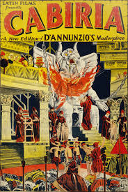
L'amiral aurait pu se renseigner. Dès 1910, un afflux de capitaux vient contredire son mépris avant l'heure : les grandes maisons de production de Turin, de Rome et de Milan font du cinéma italien l'un des premiers du monde.
L'Italie est même le premier pays à passer au long métrage, avec ses grandes fresques antiques. La plus célèbre, Cabiria (Giovanni Pastrone, 1914), avec ses intertitres signés Gabriele D'Annunzio, ses décors monumentaux et ses travellings, impressionnera jusqu'à Hollywood.
Puis vient l'effondrement des années 20, brutal. Il laisse la place à un cinéma étranger, parfois tourné en Italie même, qui profite des paysages et des studios d'un pays qui ne produit presque plus.
Le cinéma, « l'arme la plus forte »
Arrivent alors les fascistes au pouvoir. Ils comprennent vite ce que le cinéma peut faire. Ils instituent un organisme de censure et limitent les films étrangers, avec des quotas jusqu'en 1929.
Mussolini le dit et le fait inscrire en grand : « le cinéma est l'arme la plus forte ». Un slogan qui le rend conciliant avec les autres « grands » de son temps, Atatürk, le pape, tous ceux qui ont compris que l'image gouverne.
Conséquence : une politique de studios, dont le fleuron est Cinecittà, inaugurée en 1937 aux portes de Rome, et qui existe toujours. Les années d'autarcie dotent le pays d'un outil industriel complet.
Les téléphones blancs. Le cinéma propre à l'époque, c'est celui des téléphones blancs. Des comédies sentimentales situées dans un monde de grands hôtels et d'appartements modernes, où le téléphone blanc, objet rare et luxueux, signe la richesse. Un cinéma pour faire oublier, qui évite soigneusement la misère, la politique et le réel.
Puis la guerre : bombardement de Rome et débarquement des Alliés en 1943. Cinecittà est pillée, bombardée, puis transformée en camp de réfugiés.
Chapitre 02
L'après-guerre : néoréalisme et évasion
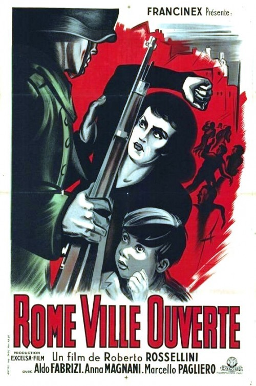
Le renouvellement se fait malgré le pillage et le bombardement de Cinecittà. C'est l'avènement d'un néoréalisme qui tourne dans la rue, avec des inconnus, sur la misère et la guerre. Rome, ville ouverte en est l'acte de naissance.
Mais il faut le dire : il n'aura de succès que grâce à son succès à l'étranger. En Italie, il passe après les films mélodramatiques et musicaux. La légende a retenu Rossellini ; le box-office, Matarazzo.
Premier extrait : Bannie du foyer
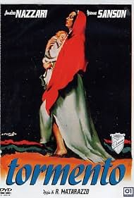
Le premier extrait de la matinée le montre : ce n'est pas le néoréalisme qui remplit les salles d'après-guerre, c'est le mélodrame. Bannie du foyer (Raffaello Matarazzo, 1950), avec le couple Amedeo Nazzari et Yvonne Sanson, en est l'archétype : une femme injustement chassée, des larmes, une réconciliation.
Ça se termine bien, malgré le titre. En 1949-50, c'est la deuxième meilleure entrée de la saison (pas de film en été : les salles ferment ou se vident à la chaleur).
L'héritage paradoxal de l'autarcie. Ce rebond s'explique aussi par un héritage gênant : celui des années d'autarcie fasciste, qui ont laissé des capacités de production. Le régime a formé des techniciens, construit des studios, créé une école de cinéma.
Et l'Italie est un pays moins centralisé que la France. Là où le cinéma français se concentre à Paris, de nombreuses villes italiennes sont équipées, avec leur panel de personnel artistique : Turin, Milan, Naples ont leurs studios, leurs acteurs, leurs dialectes.
En 1948, Cinecittà rouvre : une quarantaine de films y sont tournés par an.
Andreotti et la double censure. Giulio Andreotti, plein de fois ministre de plein de choses, est alors sous-secrétaire chargé du spectacle. Il est à l'origine de la loi de 1949 sur le cinéma, qui met en place un système d'aides : crédit d'État, primes proportionnelles aux recettes, quotas de programmation pour les films italiens.
Par cette voie, la loi institue une forme de censure qui s'ajoute à la censure officielle : un film qui déplaît n'est pas interdit, il n'est simplement pas aidé, ou pas autorisé à l'exportation. Andreotti reprochera à Umberto D. de De Sica de donner une mauvaise image du pays : « le linge sale se lave en famille ».
La critique de gauche, elle aussi, va critiquer le néoréalisme quand il s'échappe du réalisme socialiste. Pris entre deux feux.
Un cinéma d'évasion
Résultat : surtout un cinéma d'évasion. Voilà ce que produit cette politique cinématographique. Les aides récompensant le succès en salles, elles récompensent ce qui plaît : la comédie, le mélodrame, le film en costumes.
Un pays de salles. Les salles se multiplient : 16 000, contre 5 000 en France. Beaucoup sont des salles paroissiales, tenues par l'Église (pensez à Cinema Paradiso et à son curé qui coupe les baisers). En réalité, 7 000 seulement relèvent de l'exploitation commerciale.
Toujours est-il que le pays a une immense capacité d'absorption des films.
Le retour des stars. La production est relancée, comme partout en Europe. Joël Augros ne mentionne pas le trade follows film, ce principe américain selon lequel le commerce suit le film : en montrant des réfrigérateurs et des voitures, Hollywood vend aussi le mode de vie américain. L'Italie, elle, vend ses paysages et ses actrices.
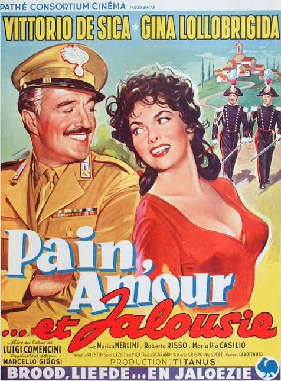
C'est ainsi le retour du star-système, et de ses plantureuses, Gina Lollobrigida en tête.
Pain, amour et fantaisie (Luigi Comencini, 1953) : c'est le néoréalisme rose. La pauvreté du pays est évoquée, le village, les carabiniers, la faim même, mais sur fond de romance et, donc, de plantureuse.
Les plantureuses
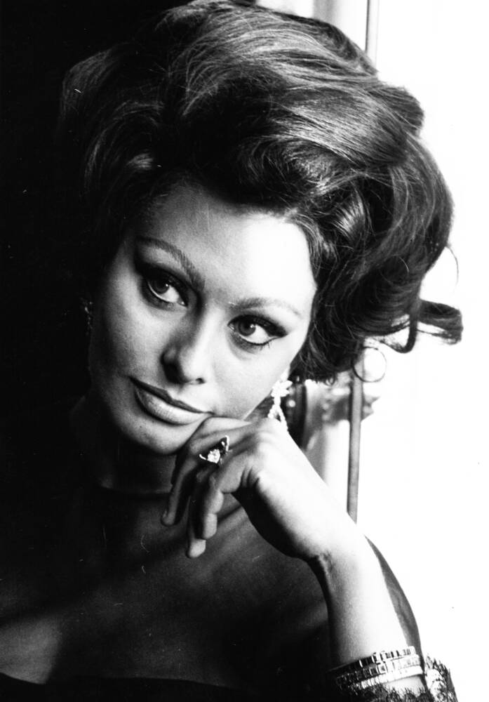
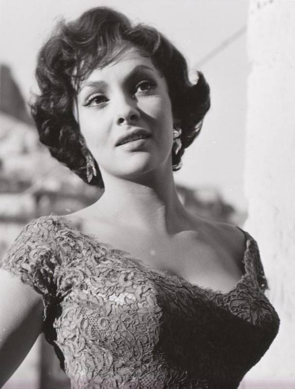
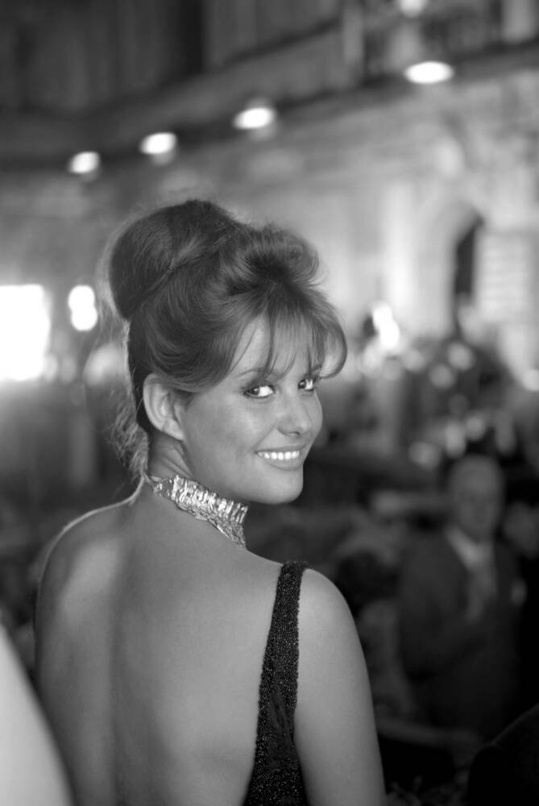
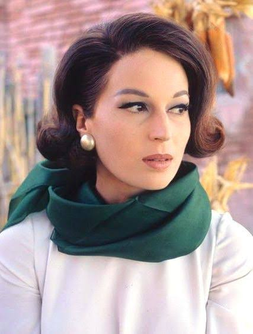
Galerie des plantureuses : le star-système revenu avec la relance de l'après-guerre. Des visages sans nom, à chacun de les reconnaître.
Chapitre 03
Comédie à l'italienne et système des filons
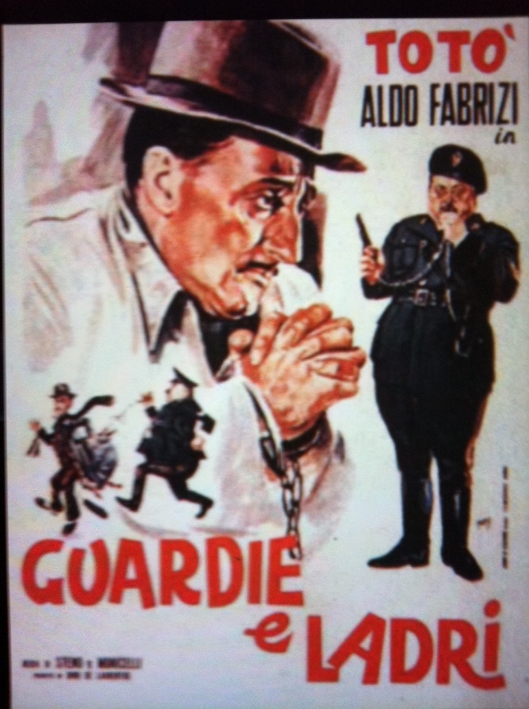
Deuxième extrait : Gendarmes et voleurs (Steno et Mario Monicelli, 1951), avec Totò en voleur et Aldo Fabrizi en gendarme, liés par une même pauvreté. Dans la même veine que Totò le Mokò, parodie de Pépé le Moko, visible en entier sur YouTube.
C'est le deuxième temps de l'histoire : le genre s'empare de la source vive néoréaliste. Totò est le grand corps comique de l'après-guerre : un prince napolitain devenu masque de la débrouille, qui traverse des dizaines de films par an.
Extrait 7 : Le Pigeon
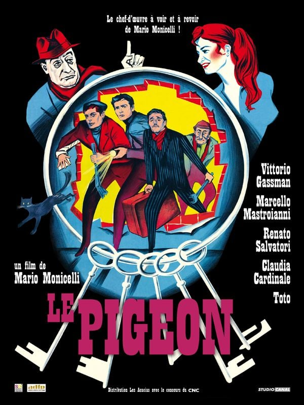
Sept ans plus tard, la comédie a trouvé sa forme. Le Pigeon (Mario Monicelli, 1958), c'est le néoréalisme qui rencontre le film de gangsters. Une bande de pieds nickelés romains prépare le casse du siècle, à la manière de Du rififi chez les hommes, et échoue à tout.
Les décors sont ceux du néoréalisme, les faubourgs, la misère ; la structure est celle du film noir ; le ton est celui de la comédie. C'est la naissance de ce qu'on appellera la comédie à l'italienne. La deuxième partie y reviendra.
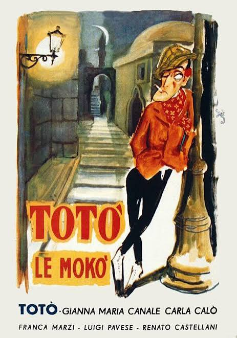
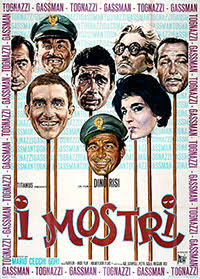
Les Monstres. Après le rire de la misère, le rire de la prospérité. Au retour de la pause, un extrait des Monstres (Dino Risi, 1963), que j'ai très envie d'aller voir. Une vingtaine de sketches où Vittorio Gassman et Ugo Tognazzi incarnent toute la galerie de l'Italie du miracle économique : lâches, vaniteux, profiteurs, odieux et drôles à la fois.
Le film aura fait un petit, Les Nouveaux Monstres, en 1977. Entre les deux, la comédie s'est assombrie au rythme du pays.
Des lois pour sauver le cinéma. Derrière les films, une économie. Face à l'hécatombe des spectateurs qui commence dans les années 60, des lois sont votées partout en Europe pour aider le cinéma. Seulement, en Italie, la Démocratie chrétienne s'intéresse de plus en plus à la télévision, qu'elle contrôle par la RAI, et de moins en moins au cinéma.
Dernière grande loi, la loi Corona. Avant elle, une loi estimait à 50 % la part de participants italiens nécessaire pour considérer un film comme italien et lui donner accès aux aides. Cela devient 100 %.
Conséquence : cela va signer le départ des Américains du cinéma italien. Hollywood, qui tournait à Cinecittà ses péplums et coproduisait volontiers, n'y trouve plus son compte.
Un mot sur les producteurs
Ils sont à la fois une des qualités et une des faiblesses du cinéma italien. Une qualité, parce que ce sont de grandes figures : Carlo Ponti, Dino De Laurentiis, Alberto Grimaldi, des joueurs qui misent gros et savent vendre à l'étranger.
Un défaut, parce qu'ils sont en recherche permanente de filon, le filon d'or qu'on exploite jusqu'à épuisement, notamment à travers la question du genre.
Le genre, c'est ce qui rend le cinéma italien exportable : un western ou un film d'horreur se vendent partout. Et c'est aussi ce qui permet sa meilleure instrumentalisation, son exploitation commerciale la plus rapide.
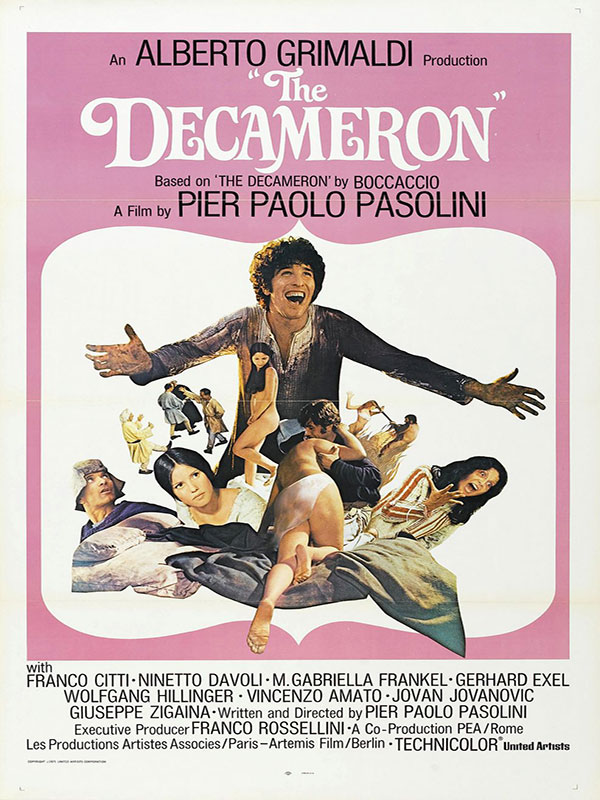
De petites sociétés qui prennent les couloirs. Derrière les grands producteurs, de petites sociétés extrêmement réactives, qui prennent les couloirs dès qu'un succès apparaît. Exemple : la Trilogie de la vie de Pasolini, produite par Alberto Grimaldi : Le Décaméron (1971), Les Contes de Canterbury (1972), Les Mille et Une Nuits (1974).
Les deux premiers vont très bien marcher, et dans leur sillon tout un tas de films vont se créer, dans l'immédiate suite du succès, parfois simplement quelques mois après, et en série. Comme aujourd'hui les direct-to-video.
Le filon, spécificité italienne. La spécificité de ce cinéma italien, c'est la rapidité. Le filon, c'est le genre, mais en plus flou : on n'a pas le temps d'établir un canon, de fixer les règles comme Hollywood l'a fait pour le western. Chaque film imite le précédent en le déformant. Une dérive perpétuelle.
Ainsi du western spaghetti, du péplum, du film d'horreur gothique, du polar. Et ainsi de la comédie érotique italienne, déclinée du Décaméron et des Contes de Canterbury : moines lubriques et épouses délaissées, des films qui remplissent les salles. Un cinéma d'exploitation, qui ne devait pas passer dans les cinémas paroissiaux.
Chapitre 04
Le déclin : la faute de Berlusconi ?
Pourquoi ce cinéma, qui tenait mieux que les autres, s'est-il mis à sombrer à la fin des années 70 ? La faute de la télévision ? C'était mon hypothèse en entrant.
Mais aux États-Unis et au Royaume-Uni, la baisse de la fréquentation a lieu avant l'arrivée massive de la télévision. Ce n'est donc pas si simple.
Reste que l'argument a servi. En France, il a légitimé le retardement de la télé privée : on a brandi l'exemple italien pour protéger le cinéma.
La naissance des télés privées
En 1976, en Italie, la Cour constitutionnelle autorise les chaînes hertziennes locales (et pas seulement le câble). Jusque-là, la RAI avait le monopole.
À partir de là, floraison de petites chaînes, portées par des associations, des partis politiques, des commerçants. Et notamment par Silvio Berlusconi, d'abord promoteur immobilier : il construit Milano 2, une ville nouvelle aux portes de Milan, qu'il va câbler pour ses habitants. Son logo de Milano 2 sera repris pour se transformer en Canale 5.
Nationales sans le dire. La loi n'autorise que le local. Alors les chaînes locales vont, petit à petit, se synchroniser pour devenir nationales sans le dire : les mêmes programmes, diffusés à la même heure par des dizaines d'émetteurs, grâce à des cassettes envoyées partout.
Cette multiplication aboutit à une solidification autour d'un trio, puis d'un duopole : la RAI publique, et les chaînes de Berlusconi, Canale 5, Italia 1 et Rete 4.
Des films aux programmes. La RAI, financée par la redevance et contrôlée par la Démocratie chrétienne, limitait le nombre de films montrés. Avec l'arrivée des télés privées, on ouvre les vannes : en dix ans, on passe de 173 heures de films dans l'année à dix fois plus, et sur les télés privées c'est encore plus. Des catalogues entiers sont rachetés.
Seulement, ce ne sont pas tant les films qui font vendre. Bien plus le sport, et les animateurs vedettes de la RAI rachetés par Berlusconi : double astuce décisive.
La culture de programme
Ce sont donc plus les programmes que les films qui font concurrence au cinéma. C'est le passage à une culture de programme, c'est-à-dire de grille, de tranches de marché, de rendez-vous fixes, et la constitution d'un audimat. Le spectateur devient une audience, vendue aux annonceurs.
Un film en salle est un événement singulier ; un film à la télévision devient une case dans une grille, entre deux écrans publicitaires.
Publicité, couleur, radio
De même arrive la publicité. Elle était apparue dès 1957 dans Carosello, ce rendez-vous du soir de la RAI qui glissait des réclames dans de petits sketches, entre les programmes pour enfants : La Linea de Cavandoli, le poussin Calimero. « Après Carosello, au lit », disaient les parents. Carosello s'arrête en 1977, et la publicité envahit tout.
La télévision couleur arrive en 1977 (très tard), en même temps que la télé privée : un effet de synchronie accaparante.
La radio connaît la même effervescence, avec les radios libres, vécue comme une libération politique face à une RAI démocrate-chrétienne trop morale.
Les années de plomb en toile de fond. Avant-dernier extrait : Le Clan des pourris (Umberto Lenzi, 1976), avec Tomas Milian. Un film policier à l'italienne, un peu comique : un « poliziottesco », le filon du polar violent des années 70.
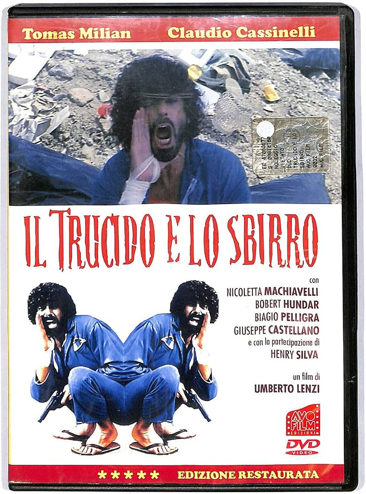
Le générique est une trouvaille : on voit d'abord un western, puis la caméra se détache du film projeté, et l'on découvre le genre policier. Un filon chasse l'autre, sous nos yeux.
Les années de plomb arrivent ainsi comme décor dans le cinéma, presque par inadvertance : enlèvements, attentats, rues dangereuses.
C'est quoi, les années de plomb ?. Une série d'attentats terroristes de l'extrême droite, à partir de la bombe de la piazza Fontana à Milan en 1969, puis la radicalisation de l'extrême gauche, Brigades rouges en tête. Une décennie de violence qui culmine avec l'affaire Moro, en 1978, et l'attentat de la gare de Bologne, en 1980.
Et cela au moment même où la télévision arrive, qui donne un tour rassurant au domicile. Dehors, la peur ; dedans, la télé. Le spectateur reste chez lui.
La troisième partie reprendra ce contexte en détail.
Des salles vieillissantes
Par ailleurs, les salles sont vieillissantes. Elles sont détenues par des réseaux régionaux qui ne sont pas assez puissants pour les rénover, et tout au plus pour les découper en plusieurs petites salles. Beaucoup ferment, y compris les salles paroissiales.
Les journaux populaires consacrés au cinéma disparaissent ; ne resteront que les publications cinéphiles. Tout cela entraîne une modification du public : ce sont les salles les plus populaires qui ferment le plus, et les salles de première vision voient leurs prix augmenter. Le cinéma devient un loisir de centre-ville, plus cher, plus cultivé.
Vieillissement des salles, mais aussi des acteurs, sans relève. Y compris pour les producteurs, d'ailleurs.
La modernité à l'italienne. Les salles se vident aussi parce que la vie sort ailleurs. Tout cela est pris dans la modernité à l'italienne. Cette modernité, c'est aussi la mobilité : la Fiat 500. L'automobile est un autre élément qui explique la baisse de la fréquentation : le dimanche, on part à la mer plutôt qu'au cinéma du quartier.
De même les boîtes de nuit. « Ça paraît un peu idiot », mais elles vont capter un public jeune par leur modernité, en contraste avec les cinémas. Elles concurrencent la sortie de groupe, la sortie sociale et de séduction. Ne serait-ce que parce qu'elles ont l'air conditionné : avantage majeur, surtout en été.
Et pendant ce temps, les filons se sont taris.
Ginger et Fred
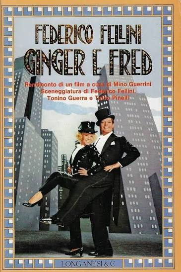
Pour clore la matinée, Fellini filme ce qui a pris la place du cinéma. Dernier extrait : Ginger et Fred (Federico Fellini, 1985). Giulietta Masina et Marcello Mastroianni y jouent deux vieux danseurs de claquettes, imitateurs de Fred Astaire et Ginger Rogers, invités dans une émission de variétés de Noël.
Autour d'eux, la télévision privée dans toute sa splendeur : sosies, monstres de foire, publicités. Une mise en abyme de l'addiction à la télé dont l'Italie a été prise, filmée par le plus grand cinéaste du pays, à la fin de sa carrière.
Un faisceau de pistes. Autant rester chez soi, ou faire autre chose. La baisse de l'appétit cinématographique s'explique ainsi : pas juste la télé, mais un faisceau d'indices, de pistes. Une explication multifactorielle, attentive à la granularité des phénomènes : télévision privée, salles vieillissantes, voiture, boîtes de nuit, filons taris.
L'après-midi, Aurore Renaut reprend le fil à sa source : l'après-guerre et la naissance du néoréalisme.
Deuxième partie
L'après-guerre
L'arte di arrangiarsi
Le cinéma italien de 1945 aux années 60, ou l'art de se débrouiller
Intervention d'Aurore Renaut (Université de Lorraine)
Jeudi 19 novembre 2026, après-midi
L'art de se débrouiller
Juste à la fin de la Seconde Guerre mondiale, alors que le pays est dévasté humainement, politiquement et économiquement, le cinéma italien va connaître le plus grand âge d'or de son histoire. Les films néoréalistes compteront parmi les œuvres les plus matricielles pour des générations de cinéastes du monde entier.
Aurore Renaut, historienne du cinéma et spécialiste de Rossellini, propose de relire cette créativité à la lumière d'un concept culturel : l'arte di arrangiarsi, cet art de la débrouille dont la plupart des personnages de ces films sont passés maîtres. Et, ajouterai-je, dont les cinéastes eux-mêmes ont dû faire preuve.
Chapitre 05
Du fascisme au néoréalisme
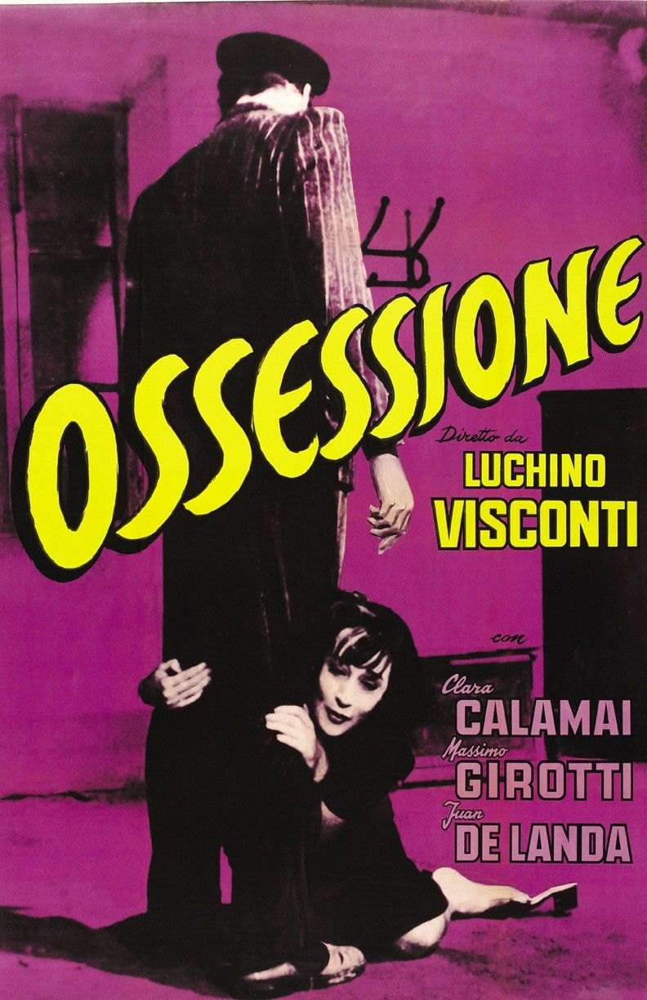
Avant la guerre, un cinéma fasciste et autarcique, celui des téléphones blancs, fait pour faire oublier. La censure y interdit de parler d'adultère ou de suicide, de misère ou de crime : l'Italie à l'écran doit être prospère, morale et heureuse.
Mais toute contrainte fait naître des moyens de la contourner, et il y eut des tentatives. C'est l'obsession de Visconti en particulier : dès 1943, Ossessione, adapté d'un roman noir américain, montre une Italie de routiers, d'adultère et de meurtre dans la plaine du Pô. La censure du régime le mutile et l'écarte des écrans.
Un courant mondial
La fin de la guerre fera naître le néoréalisme. Rome, ville ouverte va lancer ce courant, qui sera majeur pour le cinéma, y compris à l'international : il inspirera le cinéma indépendant américain, Cassavetes en tête, et jusqu'au Japon. La Nouvelle Vague française s'en réclamera aussi.
Ce que le néoréalisme invente : tourner dans la rue plutôt qu'en studio, avec des non-professionnels à côté des acteurs, sur des sujets contemporains, à hauteur d'homme. Une manière de filmer qui deviendra une manière de voir.
1943, l'Italie coupée en deux. En juillet 1943, Mussolini est renversé. Le maréchal Badoglio, qui le remplace, signe en septembre un armistice avec les Alliés. L'Allemagne occupe alors le pays : le Nord et le Centre passent sous contrôle allemand, avec la république fantoche de Mussolini à Salò, tandis que les Alliés remontent par le Sud.
Rome a été déclarée ville ouverte dès août 1943, avec l'appui du pape : une ville qui renonce à se défendre pour éviter d'être détruite. Mais ce statut n'est pas vraiment respecté, et les Allemands l'occupent jusqu'en juin 1944.
Et c'est assez incroyable que les Italiens trouvent à faire du cinéma dans ces entrefaites, où tout le monde crève de faim.
Chapitre 06
Rome, ville ouverte
Rome, ville ouverte est préparé alors que la guerre n'est pas finie : le tournage commence au début de 1945, quelques mois après la libération de Rome, quand le Nord est encore occupé. Le film sort à l'automne 1945. C'est un cinéma brûlant, fait dans la chaleur de l'événement.
Rossellini, avec Sergio Amidei et un jeune scénariste nommé Federico Fellini, y raconte la résistance romaine à partir de faits réels : un prêtre fusillé, un ingénieur communiste torturé, une femme du peuple abattue dans la rue.
Tourner avec les moyens du bord
Cinecittà sert de camp de réfugiés jusque dans les années 50. On tourne donc ailleurs : dans les appartements, les cages d'escalier, les rues. Et avec des morceaux de pellicule achetés au marché noir, de qualité inégale, ce qui donne au film son grain si particulier.
Et pour les acteurs ? Beaucoup sont compromis avec le fascisme. On a alors recours aux acteurs de cabaret et de comédie, à qui l'on va donner leur chance dans la tragédie. Aldo Fabrizi, comique du music-hall, joue le prêtre ; Anna Magnani, chanteuse de revue, joue Pina.
C'est là toute l'arte di arrangiarsi : la contrainte économique devient une esthétique.
Catholiques et communistes. Rome, ville ouverte est considéré comme le film qui a changé la cinéphilie, en particulier par certains de ses plans. On y voit Rome occupée par l'Allemagne, et des communistes et des catholiques s'allier contre l'occupant dans un même mouvement de résistance.
Le prêtre et l'ingénieur communiste meurent pour la même cause. Ce récit d'union nationale est aussi un récit politique : il prépare l'Italie d'après-guerre, où démocrates-chrétiens et communistes gouverneront d'abord ensemble. D'où, aussi, le succès du parti démocrate-chrétien.
La mort de Pina. Anna Magnani joue Pina, une veuve qui attend un enfant d'un compagnon communiste qu'elle doit épouser le lendemain, solidaire des autres résistants catholiques. Les Allemands l'arrêtent ; elle court derrière le camion, crie son nom, et une rafale l'abat.
Le plan, c'est sa mort, dans sa manière de repousser l'Allemand. Le plan est terrible, et c'est moins un plan qu'une scène. Il n'y a que la rafale pour arrêter le volcan. À la Tarantino, l'image qui sauve ? En tout cas, rien ne la sauve, elle.
Une piétà avec ses bas
On est loin de l'actrice blonde platine des téléphones blancs. Une brune éruptive vient jouer son peuple, au point d'en être une part.
La scène est rejouée sur le mode de la piétà : le prêtre recueille le corps, l'enfant pleure sa mère. Mais c'est une piétà avec ses bas, la jupe relevée sur la cuisse dans la chute. Une piétà scandaleusement érotique. Tragiquement érotique.
Il n'y a que la rafale pour arrêter le volcan.
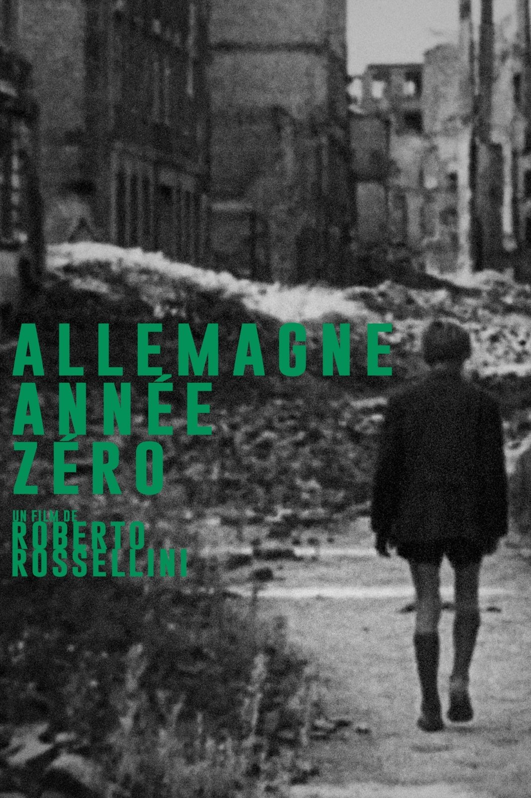
Les enfants nous regardent. L'enfance est un grand thème du néoréalisme. Les enfants nous regardent, c'est d'ailleurs le titre d'un film de De Sica de 1943. Dans Rome, ville ouverte, ce sont les enfants qui reprennent la lutte et assistent, à la fin, à l'exécution du prêtre. Comme une tentative d'en faire des témoins moraux, la génération qui devra se souvenir.
Allemagne année zéro (Rossellini, 1948) serait-il une réponse à Rome, ville ouverte ? Cette fois dans Berlin en ruines, avec un enfant qui n'est plus innocent : Edmund empoisonne son père et finit par se jeter dans le vide.
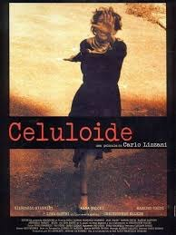
Deuxième extrait : Celluloïd. Celluloïd (Carlo Lizzani, 1996) raconte le tournage de Rome, ville ouverte, avec ses bricolages, ses manques d'argent et ses passions. Il nous montre Rossellini pris dans un dilemme en salle de montage, avec tout son artisanat : la mort de Pina n'existe qu'en une seule prise, qu'il faut rallonger tout en gardant sa force volcanique.
Par ailleurs, Rossellini aura une liaison orageuse avec Anna Magnani, avant de la quitter pour Ingrid Bergman, qui lui avait écrit après avoir vu ses films. Magnani tournera Vulcano en même temps que Bergman tourne Stromboli : la guerre des volcans.
Une profession de foi
La profession de foi du néoréalisme : regarder sans mystifier. Explorer les faits historiques, mais aussi les comportements qui les accompagnent. Expérimenter librement.
La question du style est alors résolue d'elle-même : ce sont des raisons économiques, structurelles et politiques qui dictent le film. On tourne dehors parce que les studios sont occupés ; on filme des inconnus parce que les acteurs manquent ; on raconte la guerre parce qu'elle vient d'avoir lieu.
Le néoréalisme court de 1945 à 1953. Pas si long, donc : c'est un moment politique plus qu'une école.
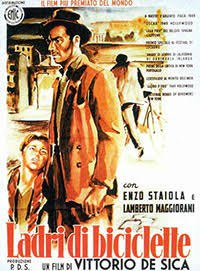
Vittorio De Sica. Vittorio De Sica est l'autre grand auteur du néoréalisme. Il s'appuie sur l'expérience de la guerre : planter la caméra dans la vie réelle, nous dire la vérité et chercher le salut. Avec Cesare Zavattini au scénario, il signe Sciuscià, Le Voleur de bicyclette (1948), Umberto D.
Avant cela, il était acteur de films de dandy, ceux des téléphones blancs, mais pas fasciste. Reste qu'il a travaillé sous le fascisme, et que Mussolini, grand spectateur, l'agaçait. D'où peut-être la culpabilité qui traverse son texte.
« Enfin, nous avons un film italien ». Rome, ville ouverte est un film réconciliateur pour les Italiens. Et à l'étranger ? Le président du Conseil d'après-guerre témoigne combien il a rendu les autres pays compréhensifs envers l'Italie, ancienne alliée de Hitler : une carte de visite pour ne pas être sanctionné lors des traités de paix.
Projeté à Cannes en 1946 sans trop de bruit, il y remporte pourtant le Grand Prix. C'est après qu'il crée des remous dans les salles. Salves d'applaudissements : « Enfin, nous avons un film italien. » Immense succès : 10 millions d'Italiens en moins d'un an, un cinquième du pays.
Il rend possible un cinéma moins formaté, moins cher, plus libre, permis par un certain vide institutionnel.
Chapitre 07
La fin du néoréalisme
Ce vide se comble en 1947, avec Giulio Andreotti qui, à 28 ans à peine, prend la main sur le cinéma et la censure. Il déteste le néoréalisme, qui montre au monde une Italie en guenilles. Son mot d'ordre, en substance : moins de guenilles, plus de jambes. Du populaire, du péplum, de la comédie.
Moins de guenilles, plus de jambes.
Une disparition organisée
D'où la disparition progressive du néoréalisme, poussée par les institutions. Et peut-être aussi une lassitude des Italiens devant la misère : après la guerre, on veut rêver, pas revoir ses ruines à l'écran.
La droite modérée, la Démocratie chrétienne, pousse pour des films plus divertissants. On a vu au chapitre 2 comment sa loi de 1949, en calculant les aides sur les recettes, favorise les films inoffensifs et populaires.
Jeunesse perdue (Pietro Germi, 1947)
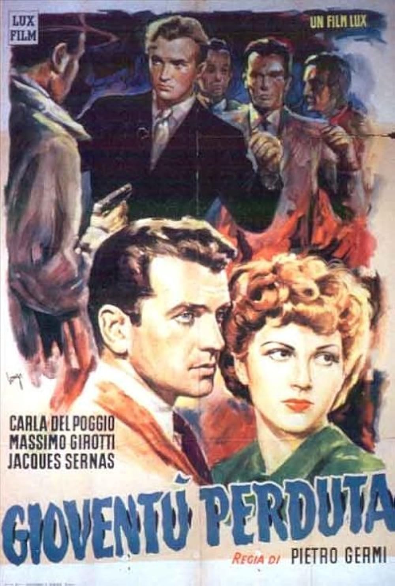
Un film noir tourné à Rome, dans l'université romaine. Pas un drame social : Germi est un cinéaste du genre. Il y raconte un jeune bourgeois, étudiant, qui ne supporte plus les privations d'après-guerre et devient chef d'une bande de voleurs.
Le film a d'abord été bloqué, sans visa d'exploitation, accusé d'être une école du crime, dans les mœurs très brûlantes de l'Italie d'après-guerre. Le scandale, c'est que la bourgeoisie fait de la délinquance. Ni la faim ni la pauvreté, mais le désir d'argent : il vole pour le superflu.
Le genre contre le néoréalisme. S'ensuivra un néoréalisme rose, comme si le genre venait se mêler au néoréalisme et l'adoucir. Cela donnera les Don Camillo, coproductions franco-italiennes avec Fernandel, où le curé et le maire communiste se chamaillent dans un village de la plaine du Pô : la guerre froide en comédie.
Désormais, quiconque veut produire un film évolue en terrain miné. La deuxième fois, il passera par le divertissement, donc par le genre. Pain, amour et fantaisie est permis à partir du moment où c'est une comédie : on peut montrer la misère, pourvu qu'on en rie.
Et le genre n'est pas si différent du filon, donc.
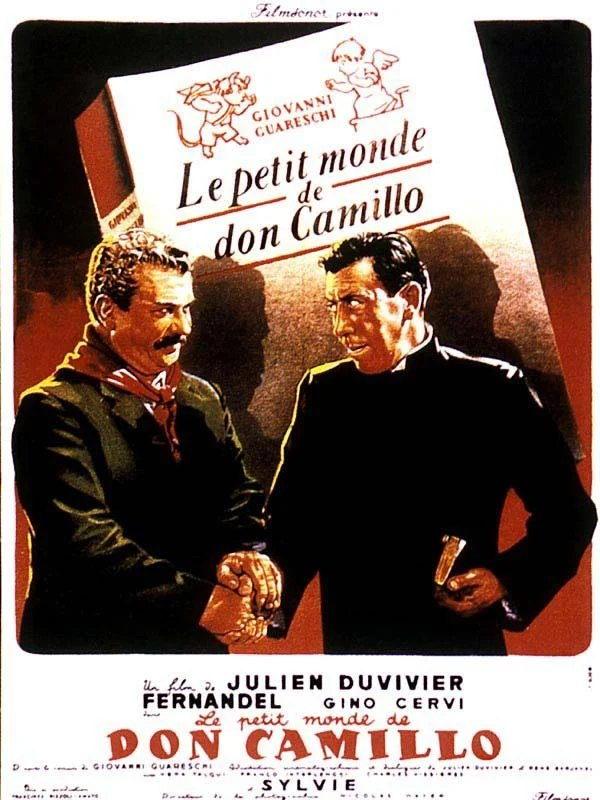
À bas la misère (Gennaro Righelli, 1945)
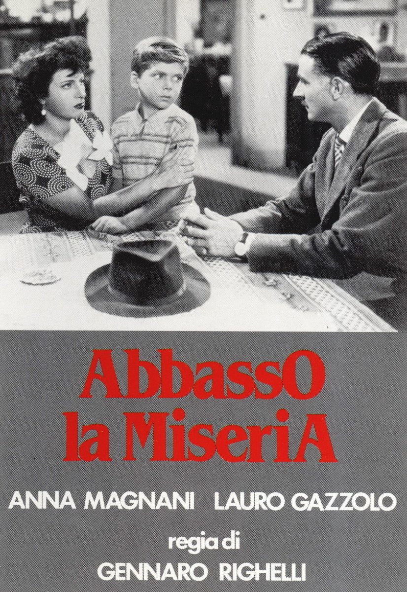
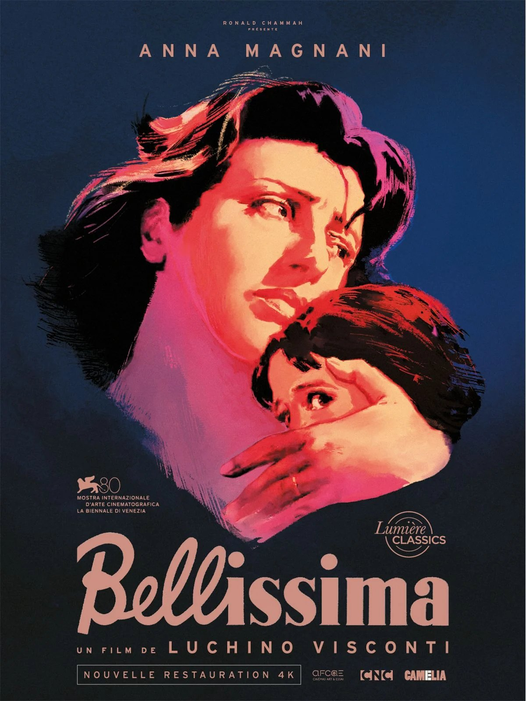
On y voit encore les thèmes du néoréalisme, la faim, le marché noir, la débrouille, mais irrigués par le genre, en l'occurrence le comique. Magnani elle-même passe du drame à la comédie tout en restant irradiante. Elle retrouve son talent premier, celui de la chanson et de la revue.
En 1951, dans Bellissima, elle tournera avec Visconti, futur auteur du Guépard. Elle y joue une mère prête à tout pour faire engager sa petite fille à Cinecittà : le cinéma qui se regarde rêver. Seule actrice que Visconti laissera improviser. Une exception parmi les autres plantureuses, issues des concours de beauté, comme Sophia Loren ou Gina Lollobrigida.
Le Pigeon, deux extraits. On retrouve Le Pigeon (Mario Monicelli, 1958), vu le matin (chapitre 3). Une parodie de film noir, à la manière du Rififi, traitée de manière burlesque : une radiographie de la société italienne à la fin des années 50, celle des chômeurs et des petits voleurs que le miracle économique a oubliés.
Il signe la naissance de la nouvelle comédie italienne, une comédie du désespoir, qui renvoie à la fois à la commedia dell'arte, ses masques et ses lazzi, et au néoréalisme, ses faubourgs et sa misère.
Beau comme un dieu. C'est aussi l'acte de naissance d'acteurs. Vittorio Gassman, jusque-là cantonné aux rôles de méchant, découvre son génie comique. Et Marcello Mastroianni, beau comme un dieu, futur héros de La Dolce Vita, deux ans plus tard.
Les rêves décrits sont ceux de crève-la-faim : le casse du siècle se termine autour d'un plat de pâtes et de pois chiches, mangé dans la cuisine qu'on voulait traverser pour atteindre le coffre.
Le casse du siècle finit en plat de pâtes.
Chapitre 08
Italie du Nord, Italie du Sud
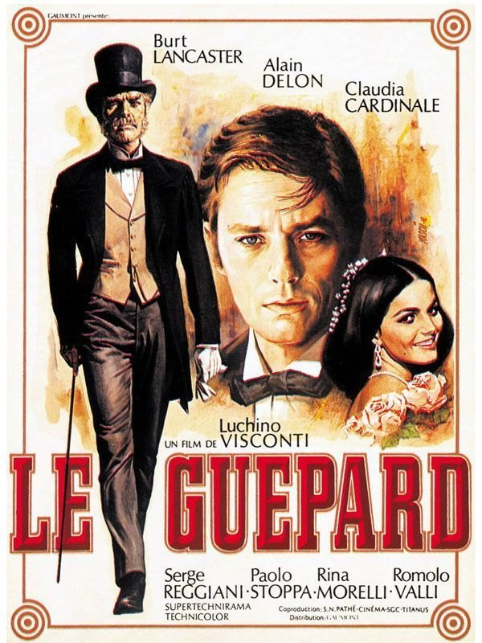
Deuxième partie de l'après-midi : l'Italie coupée en deux. L'unité de l'Italie s'est faite au profit du Nord. Le Guépard ne raconte que ça : en 1860, les Piémontais annexent le royaume des Deux-Siciles, et l'aristocratie sicilienne s'arrange avec les nouveaux maîtres. « Il faut que tout change pour que rien ne change. »
C'est un marqueur pour le cinéma italien, dont beaucoup de réalisateurs viennent du Nord industrialisé et regardent le Sud comme un ailleurs.
Déserter le Sud
À l'époque, il est interdit de quitter ses terres sans autorisation : une loi fasciste contre l'exode rural, restée en vigueur jusqu'en 1961. Partir, c'est donc déjà désobéir.
D'où les deux extraits : Le Chemin de l'espérance et Rocco et ses frères. Deux films sur le fait de déserter le Sud, à dix ans d'écart, l'un vers la France, l'autre vers Milan.
Le Chemin de l'espérance (Pietro Germi, 1950)
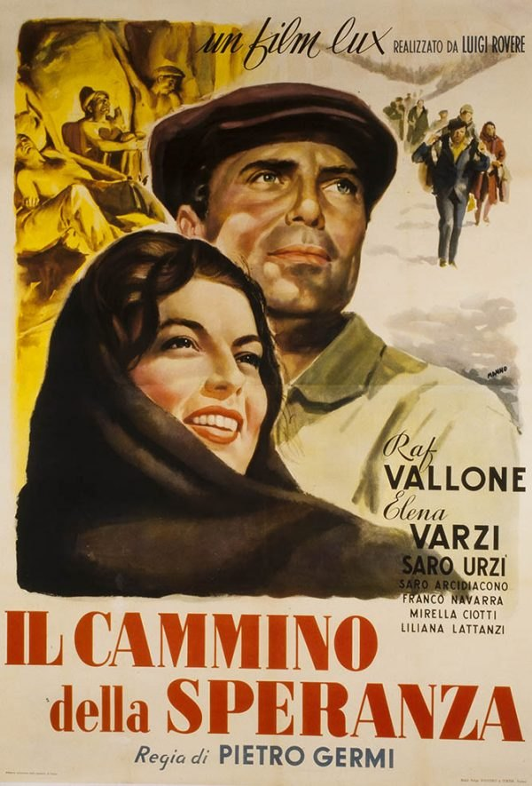
Des mineurs de soufre siciliens, après la fermeture de leur mine, partent clandestinement vers la France. On dirait Matera, mais c'est la Sicile. Deux fois l'Italie : le soleil, et le système agraire ancestral.
Le trajet du chemin de l'espérance mène jusqu'aux Alpes enneigées, qu'il faut franchir à pied. Il rappelle l'immigration italienne vers la France, et en Lorraine en particulier, dans les villes minières et sidérurgiques, avec leur fort racisme.
Rocco et ses frères (Luchino Visconti, 1960)
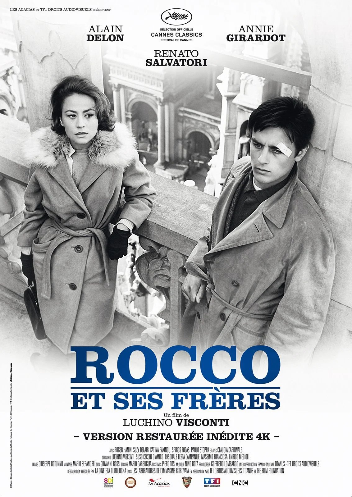
Arrive Rocco et ses frères, qui reprend symboliquement le trajet, non plus vers la France mais vers Milan. Une mère lucanienne et ses cinq fils débarquent à la gare centrale, un soir d'hiver, avec leurs valises.
Visconti filme ici sa ville, Milan, avec Alain Delon dans le rôle de Rocco, Annie Girardot et Renato Salvatori : une coproduction franco-italienne. Le film donne envie d'être vu, plein d'enthousiasme en ses débuts, avant la tragédie. Contraste entre ces méridionaux et le Milan industriel.
Une enquête. Pour concevoir le film, Visconti s'appuie sur les récits de Giovanni Testori, mais surtout sur une enquête journalistique. On y découvre que les méridionaux arrivent par centaines, très régulièrement, avant de rejoindre des soupentes, tels des sous-hommes. Ils sont souvent comparés à des animaux par les Milanais.
La boxe y est un lieu d'émancipation pécuniaire pour beaucoup d'immigrés. La prostitution aussi, d'hommes et de femmes. D'où la censure : pour le viol, et pour l'homosexualité évoquée en filigrane.
Troisième extrait : Paisà (Rossellini, 1946)
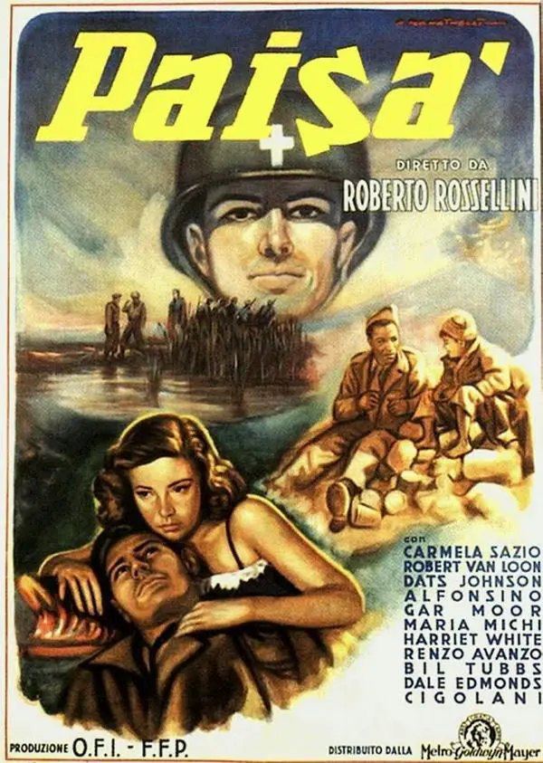
Un film fait le chemin inverse des émigrés, du Sud vers le Nord, pour recoudre le pays. Paisà raconte, en six épisodes, la remontée de l'armée américaine, de la Sicile à la plaine du Pô. Pour Rossellini, il s'agit de montrer l'Italie aux Italiens, avec un didactisme technique et géographique : une carte, une voix off, des dialectes.
Le film est plus âpre, plus rude : la volonté d'être plus ancré encore que Rome, ville ouverte. L'attente de la mort. « Dans ma famille, personne ne saura ce qui m'est arrivé » : l'histoire des vaincus racontée par le cinéma. Encore une fois, c'est un peu tarantinien, par son goût de la réparation.
Le couperet. Le couperet de la fin du film : dans le delta du Pô, des partisans italiens et des soldats alliés sont capturés par les Allemands. On jette des corps à l'eau. Alliés et résistants meurent ensemble.
Anti-gros plan, anti-dramaturgie : on ne joue pas sur l'émotion. Rossellini décide de respecter les conditions de production, la lumière grise, les marais, les visages anonymes. Réalisation rude, style rude.
Retenir cette scène : elle reviendra dans Buongiorno, notte.
Quatrième extrait : Le Cri (Michelangelo Antonioni, 1957)
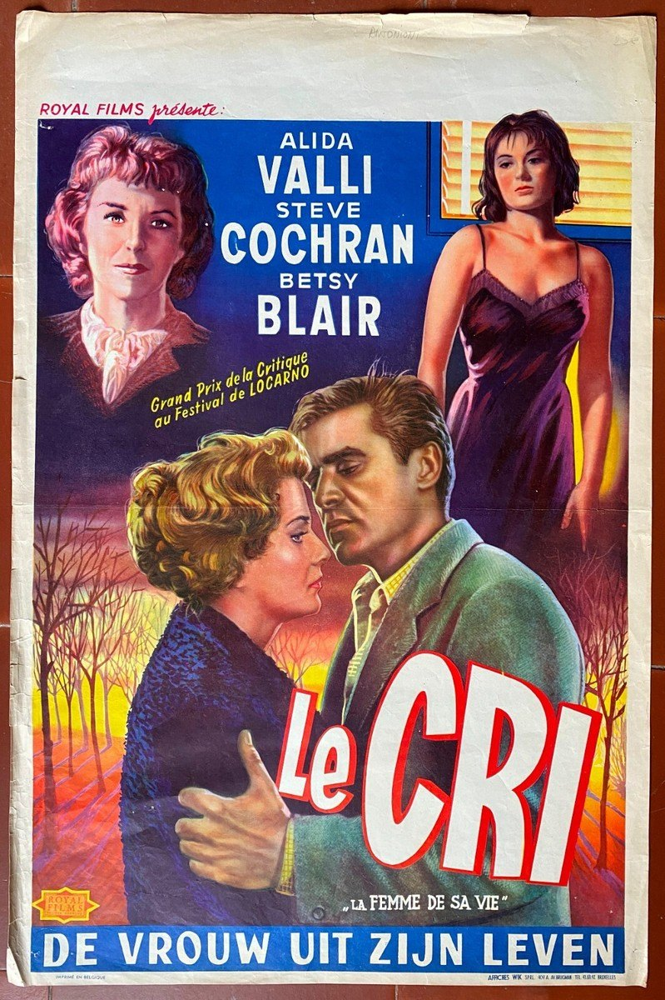
Le Nord n'est pas la terre promise. Un mélodrame masculin, par un réalisateur bourgeois de Ferrare qui s'essaie au néoréalisme. Un drame dans le Nord, lui aussi, dans les brumes de la vallée du Pô. Un ouvrier se fait quitter par sa compagne : il part sur les routes avec sa fille, en errance de femme en femme, puis la rend à sa mère.
On y trouve déjà le cinéma à venir d'Antonioni, celui de L'Avventura (1960) : un film qui ne raconte rien, quête ou perte du sujet, incommunicabilité.
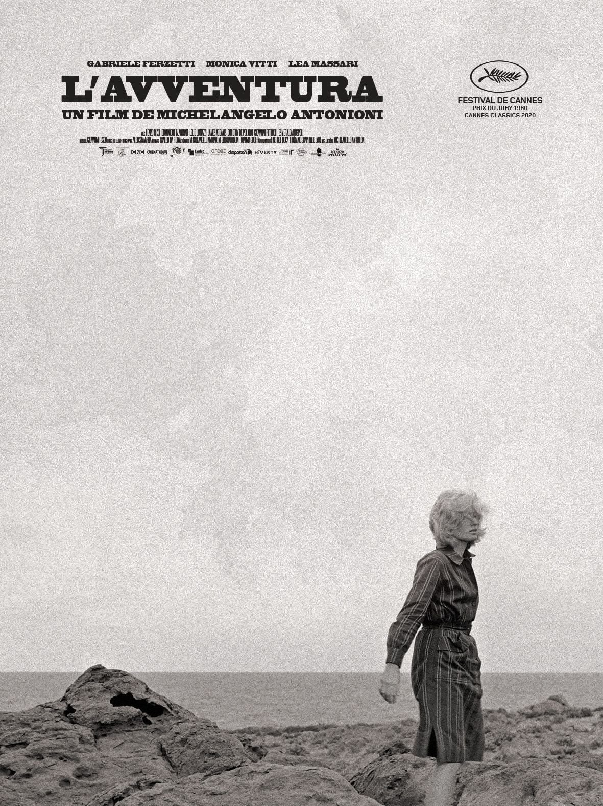
Crise de la représentation. Dans L'Avventura, des bourgeois en yacht vont d'île en île, et l'actrice principale disparaît au bout de trente minutes. On ne la retrouvera jamais, et le film semble perdu avec elle : des personnages en quête d'auteur.
Se défendre de la narration : Antonioni fait le lien avec la guerre. Les limites de la barbarie font crise de la représentation, et donc du sujet. Après les camps, on ne peut plus raconter comme avant. Et c'est déjà là, dans Le Cri.
Chapitre 09
Naples, deux fois
L'Or de Naples (Vittorio De Sica, 1954)
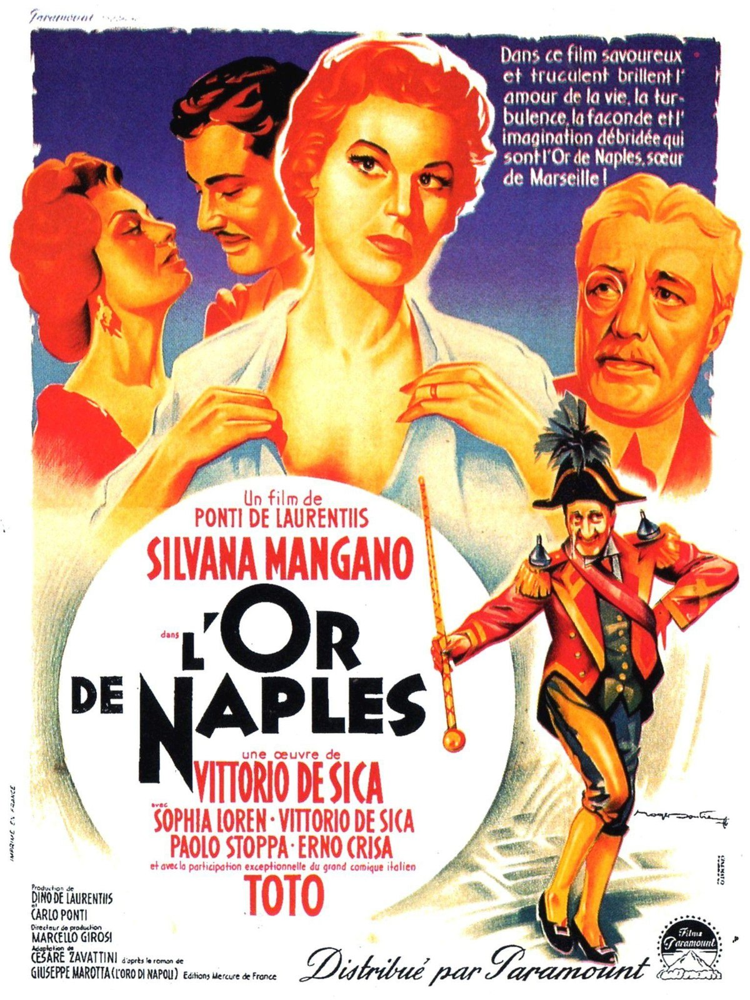
Maintenant le Sud. Un film à sketches, avec le grand Totò, Sophia Loren et Silvana Mangano : une vision très pittoresque de Naples.
Mais sous le pittoresque, la mise en scène du clientélisme et de la mafia : dans le sketch de Totò, un petit truand s'installe chez une famille et la tyrannise pendant des années. La gangrène sous couvert de comédie. Une vraie scène digne du Parrain.
Ce début de film annonce les films politiques des années 60, pleins de meurtres à Naples. Le comique est là, mais irrigué par le néoréalisme.
Main basse sur la ville (Francesco Rosi, 1963)
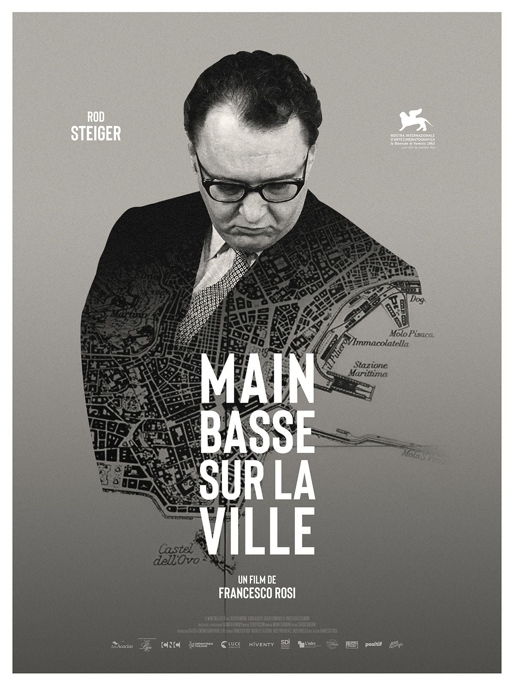
Un promoteur immobilier, joué par Rod Steiger, et conseiller municipal, fait main basse sur Naples en bâtissant sans contrôle. Le film s'ouvre sur un immeuble qui s'effondre et tue des habitants. Lion d'or à Venise.
La fascination du cinéma pour le réel : le plâtre qui tombe, dans la vraie ville de Naples, pas en studio. Le film rejoue, avant l'heure, les effondrements de Marseille. Et de nouveau, la fascination pour l'enfance, comme témoin moral après le fascisme.
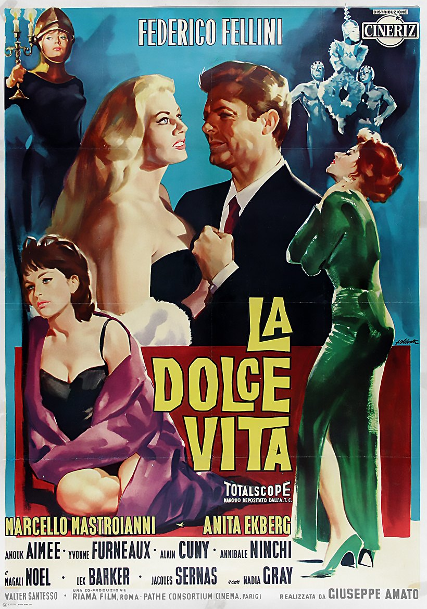
1960, l'année charnière. L'année 1960 voit sortir La Dolce Vita et Rocco et ses frères. Deux récits d'immigration : l'une paysanne, vers Milan ; l'autre petite-bourgeoise, celle d'un journaliste de province venu à Rome. La bourgeoisie, en tant que classe, prend la place des paysans à l'écran. Il faudra attendre longtemps avant de revoir le monde paysan, avec L'Arbre aux sabots d'Olmi, en 1978.
Contrairement à la Nouvelle Vague française, c'est un mouvement collectif, parce que de gauche, en fait : on partage les scénaristes, les techniciens, les convictions. Même si les scénarios l'infirment parfois.
La source vive. Le néoréalisme est la source vive du cinéma italien. Le genre et les filons vont l'interpréter, avant de le dissoudre, par la télévision et les programmes.
Les belles jambes ont eu raison des guenilles.
Reste l'héritage du néoréalisme pour informer cette mélancolie : la Nouvelle Vague, Cassavetes, et bien d'autres encore.
Et donc, la Gradiva. Le lendemain, Bellocchio montrera ce que devient cette source quand le cinéma s'en souvient.
Troisième partie · Gros plan
Buongiorno,
notte
Marco Bellocchio, 2003 : l'affaire Moro, ou le cinéma comme conscience de l'Italie
Projection présentée par Chloé Guerber, suivie d'un temps d'échange
Vendredi 20 novembre 2026, matin
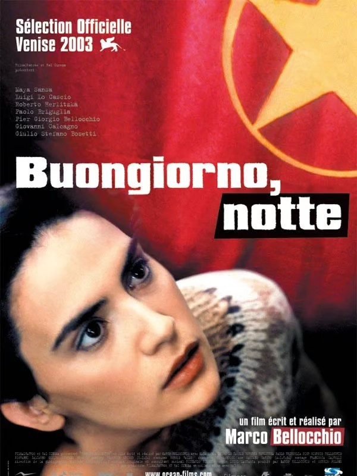
Un cinéaste en révolte
Depuis Les Poings dans les poches (1965), son premier film, jusqu'à Marx peut attendre (2021), l'œuvre de Marco Bellocchio compose une traversée singulière de l'Italie contemporaine, de ses fractures politiques et de ses tourments intimes. Cinéaste de la révolte et de la désobéissance, il n'a cessé de mettre en crise les grandes institutions : la famille, l'Église, l'école, l'armée, l'État.
Buongiorno, notte en est le cœur : un film sur l'enlèvement d'Aldo Moro par les Brigades rouges, raconté de l'intérieur de la prison du peuple, par les yeux d'une jeune brigadiste.
Pour prolonger : l'entretien avec Bellocchio sur arte.tv, à aller voir, et le Padlet de la formation, sur le site de la DAAC cinéma.
Chapitre 10
Après le néoréalisme
Hier, le néoréalisme et sa fin. Pas de mélancolie à avoir : la comédie à l'italienne s'est construite contre le néoréalisme, parfois par les mêmes auteurs. Pietro Germi, qui filmait les mineurs du Chemin de l'espérance, signe Divorce à l'italienne en 1961.
Mastroianni y joue un baron sicilien qui, faute de divorce légal, pousse sa femme dans les bras d'un amant pour pouvoir la tuer au nom de l'honneur, crime puni de quelques années à peine. Très drôle et très cynique, en plein miracle économique : l'Italie de la télévision et du frigidaire. Voir aussi Les Monstres.
Plus sombre
Vient ensuite un mouvement plus sombre, avec les années de plomb. Un cinéma très en prise avec le réel, même lorsqu'il passe par le genre : le polar, le film politique de Francesco Rosi ou d'Elio Petri, et même la comédie, qui grince de plus en plus.
1976 : le cinéma est mort, arrive Nanni Moretti
En 1976, le cinéma italien est déclaré mort. Et arrive Nanni Moretti, avec un premier film tourné en super-8 et au titre programmatique : Je suis un autarcique. Le mot n'est pas innocent dans un pays qui a connu l'autarcie fasciste : faire du cinéma seul, sans l'industrie.
Juste les sous. Les moyens de production ne sont plus là. Or il faut 200 films pour en faire un bien : un cinéma de chefs-d'œuvre a besoin d'un cinéma de série, d'un tissu industriel, de techniciens qui tournent tout le temps.
La solution passe par la coproduction avec la France : pas besoin de Berlusconi. Et par une prise de distance, avec la comédie comme avec la gauche : Moretti se moque autant des recettes du rire que des certitudes militantes de sa génération.
Il ne manque pas l'imagination, juste les sous.
Chapitre 11
Les années de plomb
Sur fond de boom économique, mais aussi de peur que l'Italie se bolchevise, alors que le Parti communiste italien est le plus puissant d'Occident, se met en place la stratégie de la tension.
L'expression naît après la bombe de la piazza Fontana, à Milan, le 12 décembre 1969, posée par des néofascistes. L'idée : multiplier les attentats et les attribuer à la gauche, pour que la population elle-même demande un retour à l'ordre. Comme sous les régimes de Franco ou de Salazar, mais par la peur plutôt que par le coup d'État.
Les deux terrorismes
439 attentats. D'un côté, les massacres de l'extrême droite, jusqu'à la gare de Bologne en 1980. De l'autre, la guérilla de l'extrême gauche, Brigades rouges en tête, et la « jambisation » : on tire dans les jambes des patrons, des juges, des journalistes, pour les marquer sans les tuer.
En 1973, la crise du pétrole met fin au miracle. La droite a peur de l'insurrection ; la gauche a peur du retour du fascisme, d'autant que le Chili vient de connaître le coup d'État de Pinochet.
Le compromis historique. C'est précisément le Chili qui inspire au secrétaire du PCI, Enrico Berlinguer, sa proposition de compromis historique : pour éviter le sort d'Allende, les communistes doivent s'entendre avec la Démocratie chrétienne plutôt que gouverner seuls avec 51 %.
Son interlocuteur, c'est Aldo Moro. Moro valide ce rapprochement avant son enlèvement et son assassinat : le PCI s'engage à ne plus toujours s'opposer dans les votes, et soutient de l'extérieur un gouvernement démocrate-chrétien.
Ce compromis, les Brigades rouges le vivent comme une trahison du communisme. Moro devient leur cible.
La mafia, les juges, Mains propres. Au début des années 80, une grande guerre entre les familles mafieuses fait 200 morts dans toute l'Italie. Elle met à nu les liens entre la mafia et l'État.
Face à eux, des juges organisent de grands procès, jusqu'à leur mort : en 1992, Giovanni Falcone puis Paolo Borsellino sont assassinés à quelques semaines d'intervalle.
La même année commence l'opération Mains propres. Des repentis mettent à jour les pots-de-vin, puis un système de corruption généralisée qui finance tous les partis. La Démocratie chrétienne est obligée de se renommer, avant de disparaître.
Sur ce grand vide
Sur ce grand vide politique arrive Berlusconi, en trois temps : l'homme des télévisions privées, que la première journée a vu naître ; l'entrepreneur qui lance son propre parti, Forza Italia, en 1994 ; le président du Conseil qui gouvernera l'Italie à plusieurs reprises.
La boucle est bouclée : celui dont on disait qu'il avait tué le cinéma italien gouverne le pays.
Chapitre 12
L'affaire Moro
Pour revenir au film. Le 16 mars 1978, le jour même où le Parlement doit voter la confiance à un gouvernement soutenu pour la première fois par le PCI, un commando des Brigades rouges attaque la voiture d'Aldo Moro, président de la Démocratie chrétienne, via Fani à Rome. Les cinq hommes de son escorte sont tués.
Moro est pris en otage, pour obtenir la libération de brigadistes emprisonnés. Personne ne veut négocier avec eux : ni l'État, ni la Démocratie chrétienne, ni le PCI. C'est la « ligne de la fermeté ».
55 jours
Pendant sa captivité, Moro écrit de nombreuses lettres à sa famille, à ses amis politiques, au pape. Il supplie qu'on négocie ; ses anciens collègues le déclarent sous influence, plus lui-même. Le pape Paul VI, son ami, écrit aux « hommes des Brigades rouges » pour demander sa libération « sans conditions ».
55 jours plus tard, le 9 mai 1978, son corps est retrouvé dans le coffre d'une Renault 4 rouge, via Caetani, à quelques pas des sièges de la Démocratie chrétienne et du Parti communiste. Le symbole est voulu : entre les deux partis du compromis.
Todo modo, avant les faits. Todo modo (Elio Petri, 1976), d'après Leonardo Sciascia, précède les faits. Il raconte comment des notables démocrates-chrétiens se rassemblent pour une retraite d'exercices spirituels, face à une épidémie qui frappe le pays, sous la direction d'un jésuite joué par Mastroianni. Un exercice d'autopunition : les participants meurent un à un.
Gian Maria Volonté y joue « M. », copié de Moro dans sa gestuelle, sa tête baissée, son sourire timide. Le film somatise l'envie de la Démocratie chrétienne de s'expier. Après la mort de Moro, il sera retiré de la circulation.
Après l'assassinat. Après l'assassinat, beaucoup de littérature, et de théories : plus encore que sur l'affaire Kennedy. Moro était pro-arabe en politique étrangère et favorable à l'accord avec la gauche : beaucoup d'ennemis possibles, à Washington comme à Moscou, dans les services secrets comme dans son propre parti. D'où certains films d'hypothèse, qui cherchent le complot derrière les brigadistes.
Les écrits concordants de brigadistes, publiés à partir des années 90, vont permettre d'y voir plus clair. Bellocchio choisit de partir d'eux.
Un film de télévision contre la télévision
Le film s'appuie sur Le Prisonnier, le livre d'Anna Laura Braghetti, écrit avec Paola Tavella. Braghetti était la locataire de l'appartement où Moro fut détenu, celle qui jouait la jeune femme ordinaire pour couvrir la prison. Elle est morte en novembre 2025, après vingt-deux ans de prison et des années d'engagement social.
C'est un film de commande de la RAI, ce qui le rend, paradoxalement, très libre. Paradoxe plus profond encore : financé par la télévision, le film va mettre en scène la rivalité entre l'image télé et l'image cinéma.
Chapitre 13
Les entrées du film
Rome, 1978. Un jeune couple emménage dans un appartement ordinaire. En réalité, ce sont des brigadistes, et l'appartement va devenir la « prison du peuple ». Chiara (Maya Sansa), le personnage inspiré de Braghetti, y vit avec trois camarades ; Moro (Roberto Herlitzka) y est enfermé dans une cellule aménagée derrière une bibliothèque.
Trois entrées dans le film : Chiara ; les hallucinations, plutôt que des flash-back, dans le sillage de Jean Vigo et de L'Atalante ; et la télévision, toujours allumée dans la chambre des brigadistes.
Bonjour, nuit
Le titre vient d'un poème d'Emily Dickinson, « Good Morning — Midnight — », dans la traduction italienne de Nicola Gardini. Bonjour, nuit : une conscience éveillée au milieu de l'obscurité, une image qui surgit dans le noir, comme au cinéma.
Le précis de la décision. En toile de fond, deux pièces françaises : Les Mains sales de Sartre et Les Justes de Camus, où un terroriste renonce à lancer sa bombe parce que des enfants sont dans la calèche. Cette dialectique folle qui pousse, ou non, à l'action. Le précis de la décision.
Et si Aldo Moro était sorti de l'appartement ?
C'est l'hypothèse du film. À la fin, Moro marche librement dans les rues de Rome, au petit matin. On pense à Tarantino et à son image revanche, uchronique.
Mais chez Tarantino, la revanche est consommée : on brûle Hitler, la fiction l'emporte sur l'histoire. Chez Bellocchio, ce rêve est posé à côté des images d'archives des obsèques, sans jamais les remplacer.
Le film montre ce qu'un choix aurait pu être, et laisse voir qu'il n'a pas été fait.
Chapitre 14
Quelque chose de la cellule
Cellule carcérale, mais cellule vivante, au sens biologique et militant. Là où le film dépasse le théâtre du huis clos, c'est qu'on les voit vivre. Comment s'organise une prise d'otage, quelles en sont les conditions matérielles : les courses, les voisins, les horaires. Qu'est-ce qu'on mange, qui fait la cuisine, qui monte la garde.
La révolution vue depuis la cuisine.
Comment survient le doute
Et avant le doute, comment le moral tient. Notamment face à cette déception : personne ne les reconnaît. Le prolétariat qu'ils prétendent libérer ne se soulève pas ; les ouvriers défilent contre eux. Personne ne leur donne l'heure, littéralement.
Et avec ce soupçon : les autres, les politiques, ne seraient-ils pas en train de faire leurs affaires, de laisser mourir Moro par calcul ? À quoi sert l'idéologie face au cynisme ?
Personne ne leur donne l'heure.
Deux choses italiennes. La confrontation, aussi, entre le christianisme et les Brigades rouges : deux choses italiennes. Moro est un catholique fervent, qui prie dans sa cellule. Le procès révolutionnaire qu'on lui fait a quelque chose d'une confession inversée.
La musique. Et oui, la musique : les accords de Shine On You Crazy Diamond et le chant sans paroles de The Great Gig in the Sky, de Pink Floyd, mêlés à Schubert et à Verdi. La musique vient à l'héroïne comme une pensée.
Chiara, l'héroïne tampon. Car l'héroïne est centrale. C'est elle qui fait tampon entre le prisonnier et ses geôliers, entre l'appartement et le dehors, entre le film et nous. Imprégnée, elle nous imprègne de ses doutes. Elle épie Moro par un judas : son regard est le nôtre.
Et puis la question érotique, discrète mais présente : un corps de jeune femme enfermé avec des hommes, un désir qui n'a pas de place dans la discipline révolutionnaire.
On a pu reprocher au film d'adoucir la vraie Braghetti. Le tampon est aussi là : il permet d'entrer dans la cellule sans absoudre ceux qui la tiennent.
Chapitre 15
Le cinéma comme medium
Ce qui me passionne : les images qui viennent à Chiara sont des images de cinéma. De cinéma néoréaliste, celui que l'on a vu la veille comme un cinéma brûlant. Des images de la Résistance, parmi lesquelles, me semble-t-il, le couperet final de Paisà : les partisans exécutés, les corps jetés à l'eau dans le delta du Pô.
Le cinéma de 1946 remonte dans la tête d'une brigadiste de 1978. Ce n'est pas une citation de cinéphile : c'est une mémoire collective qu'elle n'a pas choisie.
Une conscience des Italiens
Comme si le cinéma était une sorte de conscience des Italiens. La mémoire de la Résistance traverse aussi le film par d'autres voies : un repas de famille où l'on chante les chants des partisans en souvenir d'un camarade, les espérances trahies de la Libération.
Le néoréalisme, dont la deuxième partie disait qu'il était la source vive du cinéma italien, revient ici comme une voix intérieure. Il ne raconte plus le présent : il le juge.
Rêvée par l'Italie. Chiara n'a pas de rêve personnel. Pas un souvenir d'enfance, pas un fantasme à elle : ce qui lui vient, ce sont toujours des archives, des actualités, et très souvent du cinéma.
Elle n'a pas d'inconscient privé. Ses rêves ne lui appartiennent pas : elle est rêvée par l'Italie plus qu'elle ne rêve. Son intériorité est faite de la mémoire en images de son pays.
Elle ne rêve pas : l'Italie rêve en elle.
Un inconscient collectif. Bellocchio constitue ainsi le cinéma comme un inconscient collectif pour l'Italie. Non pas au sens d'archétypes éternels, mais d'une mémoire historique, faite d'images : la Résistance filmée par Rossellini, les actualités, les chants des partisans.
C'est là que la psychanalyse du film, au sens d'une étude des signes, prend tout son sens : l'inconscient qu'il explore est national, et il est fait de cinéma.
L'Italie se découvre alors comme une nation-image, intégralement constituée par les images qu'elle produit. Et c'est par elles qu'elle peut se penser.
Plus qu'un média, un medium
Dans l'appartement, la télévision tourne en permanence. C'est le média : le flux, les programmes, tout ce que la première journée décrivait comme ce qui a tué le cinéma italien. Les brigadistes la regardent pour savoir si on parle d'eux, si on les reconnaît. Elle leur renvoie le pays en direct, sans mémoire ni distance.
Et même de l'immédiat : du direct, sans médiation ni distance, un présent qui ne se pense pas.
Dans la tête de Chiara, le cinéma néoréaliste agit comme un medium, presque au sens spirite : il fait parler les morts, les partisans. Lui médiatise : il monte, il met à distance, il relie 1978 à 1945. Et c'est cette distance qui permet à l'Italie de se penser.
La télé informe les brigadistes ; le cinéma fait penser Chiara.
La bibliothèque, l'archive et la fiction. Chiara semble travailler dans une bibliothèque, aux archives : une vie de bureau ordinaire, qui couvre sa vie clandestine. C'est aussi là que travaille Enzo, le jeune collègue qui écrit un scénario intitulé… Buongiorno, notte. Un personnage porteur de scénario, dans le film même.
Le lieu de l'archive est donc aussi celui où s'écrit la fiction : le stock et le montage, ce qui garde la mémoire et ce qui imagine une autre fin. Face au pur présent de la télé, l'archive et le cinéma renvoient Chiara à ce qui a été, et à ce qui pourrait être.
Juger un héritage
Les Brigades rouges se pensaient comme une nouvelle Résistance, les héritiers trahis des partisans, ceux qui allaient achever la révolution que la Libération avait laissée en plan. En faisant remonter les vraies images de la Résistance dans la conscience de Chiara, Bellocchio confronte cette prétention à ce qu'elle revendique.
Les partisans de Paisà meurent pour libérer un pays ; les brigadistes gardent un vieil homme dans une chambre.
Critère de vérité ou tendresse ? Les deux, mon capitaine. Le cinéma juge l'héritage revendiqué, et laisse à Chiara une chance d'être rattrapée par ces images.
Récapituler l'Italie et le cinéma. Le film récapitule l'histoire de l'Italie et celle du cinéma, en tant que le cinéma fait partie de l'histoire et va dans un sens. Bellocchio n'est pas un fan du romantisme, ni de l'héroïsme. Dont acte, mais tout de même : le rêve de Moro libre est l'un des plus beaux plans romantiques du cinéma italien récent.
Source vive du cinéma : esprit Lumière, qui enregistre le réel, esprit Méliès, qui l'enchante. À mon sens, hybridé ici par le genre, le film de prise d'otage. Puis un vrai surgissement d'images, d'hallucinations, comme une psychanalyse, au sens d'une étude des signes, proprement cinématographique.
Faire un film, faire un choix. Une réflexion sur le choix et le doute, avec plusieurs fins possibles, que le film laisse coexister. Qu'est-ce que c'est que faire un film ? Qu'est-ce que c'est que faire un choix ? (J'aime bien.)
La télévision a tué le cinéma italien, disait la première journée. Le néoréalisme en reste la source vive, disait la deuxième. Ici, il revient comme conscience.
Quatrième partie
Marco Bellocchio
ou l'Italie désaccordée
Soixante ans de cinéma pour psychanalyser l'Italie, des Poings dans les poches à Marx peut attendre
Conférence de Mathieu Macheret (Le Monde, France Culture)
Vendredi 20 novembre 2026, après-midi
Retour sur le film du matin
Mathieu Macheret commence par revenir sur Buongiorno, notte, avec une formule : le passage de la politique à l'éthique. Le film ne demande plus qui avait raison, mais ce que chacun fait de sa décision.
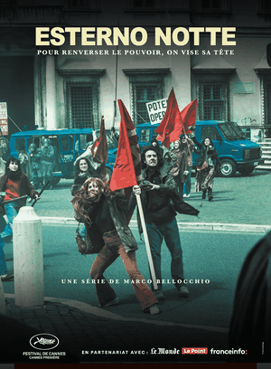
Les films d'époque, c'est toujours un peu un bal masqué : costumes, voitures, décors reconstitués. Mais ici, tout se joue dans un appartement, et le bal masqué devient huis clos.
Vingt ans plus tard, Bellocchio revient encore sur ce meurtre du père qu'est l'enlèvement d'Aldo Moro, avec la série Esterno notte (2022) : le contrechamp de Buongiorno, notte, l'affaire vue de l'extérieur, de la famille, de l'Église, des politiques. En série, cette fois.
L'enfant terrible de la modernité. La place de Bellocchio est particulière. Enfant terrible de la modernité, il va conserver son exigence par-delà l'effondrement que la première journée a raconté : celui de toute l'infrastructure cinématographique de l'Italie.
C'est le quatrième temps de notre histoire : le retour. Quand le néoréalisme est éteint et les filons taris, il reste un cinéaste pour faire remonter ce passé.
Une œuvre composée de thèmes adultes, mais d'une force juvénile. Voilà ce qui peut parler à des collégiens et à des lycéens.
Chapitre 16
Un cinéaste dans l'histoire
Marco Bellocchio naît en 1939, à Bobbio, près de Plaisance, sous le régime fasciste, au moment où commence la Seconde Guerre mondiale. Son adolescence traverse le boom italien, sa jeunesse les années de plomb, son âge adulte l'ère Berlusconi.
Il grandit entre deux héritages : la gloire du néoréalisme et la honte du fascisme. Il en fera un cinéaste enragé. Tous les corps constitués italiens vont passer au crible de son cinéma : la famille, l'Église, l'école, l'armée, l'État, la psychiatrie.
Une psychanalyse à ciel ouvert
Il vient de la bourgeoisie moyenne de l'Italie du Nord, et sa biographie nourrit toute l'œuvre. La mort de son père, quand il est adolescent. La froideur d'une mère bigote. Le suicide de son frère jumeau, Camillo, en 1968. Un autre frère, malade mental.
Fils en révolte, frère en déprime, père discrédité, mère haïe et aimée : ses films rejouent sans cesse ces figures. Une psychanalyse à ciel ouvert.
De Mao à la folie. À la fin des années 60, Bellocchio s'engage dans un groupe maoïste. Le désenchantement révolutionnaire vient vite. Il en reste une sensibilité aux thèmes sociaux.
Mais aussi à la folie. En 1975, il cosigne Fous à délier, un documentaire sur l'asile de Parme et les patients qu'on en fait sortir : le mouvement antipsychiatrique, qui aboutira en 1978 à la fermeture des asiles en Italie, le fascine.
De là un intérêt pour l'inconscient, y compris l'inconscient du pays. La folie sera le fil rouge de l'œuvre.
L'emprise de Fagioli. La psychanalyse connaît alors un gros succès en Italie. Bellocchio se rapproche de Massimo Fagioli, un psychiatre dissident qui anime des séances d'« analyse collective » et promet une psychanalyse collective et anti-freudienne, fondée sur l'interprétation des rêves.
Fagioli l'aide à écrire. Ensemble, ils font quatre films, de Le Diable au corps (1986) à Le Rêve du papillon (1994), autour du désir et du rêve.
Bellocchio racontera après coup cette période comme une sorte d'emprise du psychanalyste sur lui. La rupture vient avec Le Prince de Hombourg (1997), d'après Kleist.
L'histoire comme fleuve noir
De Les Poings dans les poches (1965) jusqu'à son dernier long métrage, L'Enlèvement (2023), Bellocchio fait la psychanalyse de son pays, et en particulier des années de plomb. Ses personnages métabolisent ce qui se joue en Italie.
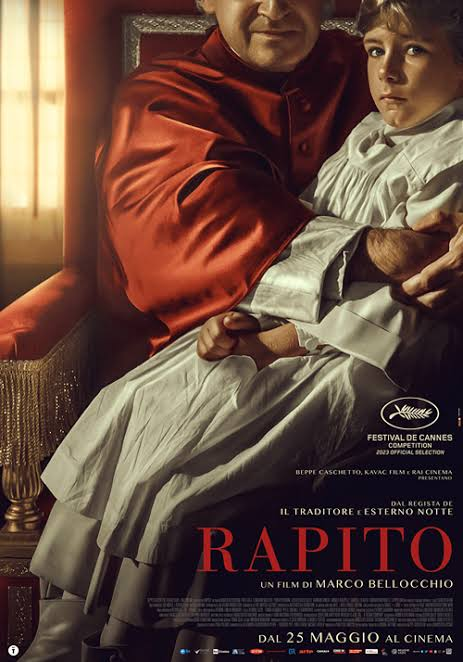
L'Enlèvement raconte l'affaire Mortara : en 1858, à Bologne, un enfant juif est arraché à sa famille par l'État pontifical pour être élevé dans la foi catholique. Vincere (2009) raconte l'effacement de la première femme de Mussolini, Ida Dalser.
Chez lui, l'histoire est un fleuve noir et impétueux, et la conscience personnelle en est le reflet.
Chapitre 17
Les années de révolte
Extrait 1 : Les Poings dans les poches (1965)
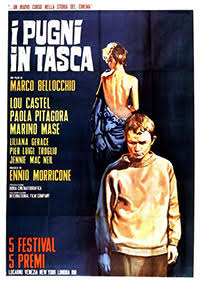
Bellocchio a 25 ans. Il tourne son premier film dans la maison familiale de Bobbio, avec des amis et peu d'argent : un film autoproduit, en forme de portrait mental. Un jeu de massacre familial : Alessandro, épileptique, joué par Lou Castel, décide d'éliminer un à un les membres de sa famille.
Voile d'argent à Locarno, distingué à Venise : le film fait l'effet d'une bombe.
Une réplique à la Nouvelle Vague. Un expressionnisme poétique. Avec Bernardo Bertolucci (Prima della rivoluzione, 1964), Bellocchio annonce un droit de réplique italien à la Nouvelle Vague française.
Bon, vraiment pas agréable. Montage heurté, tout en syncope et en emballement. Le film s'ouvre et se clôt sur le motif du miroir.
Un geste désaccordé : une sarabande d'états limites, un état nerveux extrême, entre névrose et psychose. Un noir et blanc très cru. Arraché aux circonstances : un portrait à vif. Plus tard viendra un néoclassicisme plus calme.
La maison-prison. La maison est le siège d'un ennui terrible. Un château gothique qui est une prison, un peu comme, plus tard, l'appartement de Buongiorno, notte. Le père est absent, la mère est aveugle.
Le rituel bourgeois bien orchestré finit en film saillant, rude. Les miroirs sont là pour capter l'angoisse : la psyché, au double sens du mot, comme retord de la personnalité.
Le milieu est confiné, mais les angles et les plans varient sans cesse. Un tournage énergique, qui disqualifie toute maîtrise formelle pour faire naître un art sui generis, spontané, secoué, à l'image des élans passionnels de la famille.
1965 : 68 s'annonce
Une famille corrompue de l'intérieur. La provocation n'est peut-être pas unique, mais en Italie la famille est particulièrement sacrée.
Le film crée un choc, et suscite un soutien. La jeunesse des années 60 s'y est reconnue : prise dans un arbre généalogique croupissant. On est en 1965 ; 68 s'annonce.
Extrait 2 : La Chine est proche (1967)
Deux ans plus tard, un deuxième film, peu connu. Il parle des groupes maoïstes : des jeunes qui veulent s'émanciper d'un communisme soviétique jugé patriarcal. La montée en radicalité, au même moment que La Chinoise de Godard.
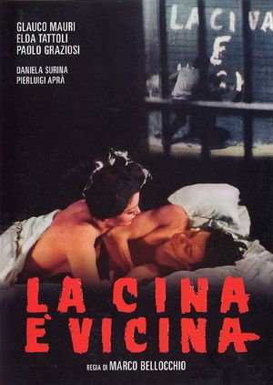
Mais Bellocchio est plus proche de la comédie à l'italienne : féroce et satirique. Une farce buñuélienne, un esprit frondeur et grotesque, moqueur. Un état des lieux de la gauche.
Ennio Morricone signe la musique : la respectabilité dès le deuxième film.
L'aristocrate et le peuple. Le synopsis : un riche propriétaire se présente aux élections sous l'étiquette socialiste, et son jeune frère, maoïste dans un groupuscule de trois membres, veut l'en empêcher. Encore la famille, mais sous un angle politique cette fois. Le film observe autant la fascination révolutionnaire que son impuissance.
L'extrait : une scène de meeting sur la place publique, dans un petit village. L'aristocrate qui se dit du côté du peuple va se faire recevoir. Attitude de mépris et de domination, grande nervosité, bajoues pendantes (très Bayrou, ai-je noté). Plutôt que de séduire, il met tout le monde contre lui.
Mettre en scène le collectif. La communauté populaire dégénère. La scène somatise un pays sous tension, jusqu'au burlesque.
Talent de Bellocchio à mettre en scène le collectif : une multiplicité de visages, des dynamiques bien orchestrées par des variations d'axe. Télescopage des dialogues, entrelacement du in et du off, des répliques très rebondissantes. Une logique du pire, jusqu'à la casse de la voiture, idole bourgeoise.
L'idéalisme bourgeois mis en difficulté par la trivialité anarchisante du populaire : la différence de classe. Un film de jeunesse où l'on reconnaît son rire sardonique, qui appelle de ses vœux un écroulement de l'ordre établi.
Extrait 3 : Au nom du père (1972)
Troisième long métrage, film étrange : un pic de modernité, presque d'avant-garde. Un moment révolutionnaire presque gothique, en rupture avec le réalisme.
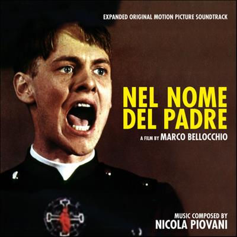
Il dépeint le quotidien d'un collège de jésuites à la fin des années 50 comme un asile d'aliénés. Un ordre unique, qui provoque des troubles chez les pensionnaires. Une poignée d'agitateurs nietzschéens va essayer de renverser l'ordre établi, en huis clos.
Le titre détourne la formule liturgique, pour parler du patriarcat plus que simplement de la religion.
Une boîte mentale. Le collège est une boîte mentale où naissent des hallucinations et des cauchemars. Plus de distinction claire entre le réel et le symbolique, parfois même des visions du futur, comme la destruction du lieu au bulldozer, qui souligne son archaïsme.
Un théâtre satirique et grotesque, qui permet de sortir d'un réalisme qui est, en ce début des années 70, devenu le cinéma bourgeois. Résonance avec d'autres films limites, comme Salò ou les 120 journées de Sodome de Pasolini.
Foucault au collège. L'extrait : le moment de la messe où une diatribe est prononcée contre la masturbation, obsession terrible de toutes les familles du XIXe siècle. C'est un objet d'étude de Foucault, dans Les Anormaux et l'Histoire de la sexualité : la répression par les institutions éducatives, familiales et religieuses. Beaucoup de résonances entre Foucault et Bellocchio.
La thèse de Foucault : une érotique de la rétention. Amenée dans l'ordre du discours, la sexualité devient un fantasme. C'est ce qu'on voit ici : le discours de répression provoque une envie torride.
Salement baroque
Jusqu'à faire s'animer une sainte. Attention aux visages, dans un expressionnisme à la Otto Dix, celui de la Nouvelle Objectivité, qui les déforme. Puis une vision religieuse : quelque chose de baroque, salement baroque, avec cette Vierge qui marche, lévite presque vers l'adolescent.
Mélange profond de l'ordre profane et du symbolique, sans besoin du fantastique. Aucune bascule signalée pour transformer la scène en espace mental. Un montage hirsute, non fluide, qui joue avec notre incrédulité.
Un registre lyrique où la musique remplace la diatribe et marque le passage du réel au symbolique. Une logique opératique, qui ne cessera de se développer dans l'œuvre.
Chapitre 18
Le rêve et le désir
Extrait 4 : Le Saut dans le vide (1980)
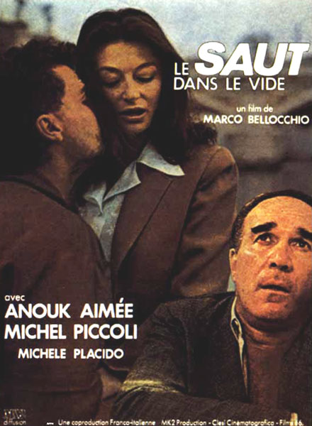
Deux extraits : une scène nocturne et la dernière scène du film. De nouveau la famille, au début des années 80, barricadée du fait des années de plomb : une société de contrôle. Un juge, joué par Michel Piccoli, et sa sœur, jouée par Anouk Aimée, vivent ensemble comme un vieux couple, liés par l'habitude et la dépendance.
La narration est compliquée à suivre dans ces extraits, mais ils montrent l'importance du rêve chez Bellocchio.
Le rêve sans apparat. Estompement de la différence entre le rêve et la normalité, sans, encore une fois, de soulignement du passage. La beauté du non-recours aux artifices fantastiques.
Le second extrait, le suicide de Piccoli : un plan-séquence où la caméra prend une indépendance totale, caressant les pièces, suivant à travers le salon. Piccoli est comme surpris ici ou là par cette caméra : une scène chorégraphique, un jeu du chat et de la souris.
Une définition quasi pure de l'espace mental : l'appartement s'établit comme une psyché (ça pousse à prendre soin de son appart). Et le suicide, pour sortir de cet espace mental.
Deux données très importantes du cinéma de Bellocchio : la théâtralité, et le rêve sans apparat.
Extrait 5 : Le Diable au corps (1986)
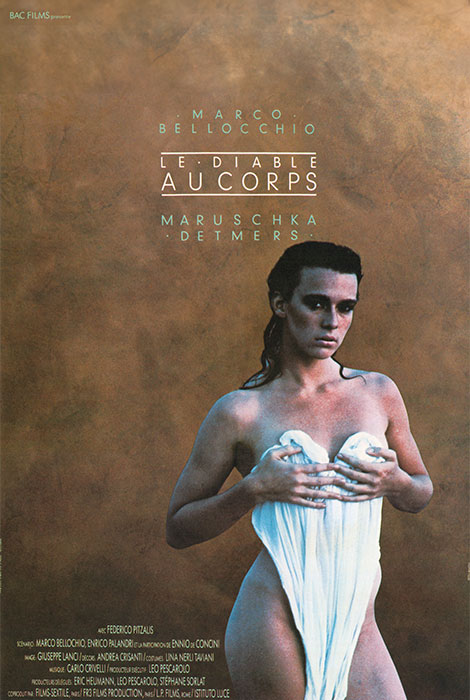
Dans les années 80, après la déception révolutionnaire et les années de plomb, qui débouchent sur le renforcement des pouvoirs réactionnaires, Bellocchio s'en remet au désir. Une adaptation très lointaine du roman de Radiguet, et le premier des quatre films avec son psychanalyste.
Les échecs révolutionnaires ne sont plus abordés dans leur dimension collective, mais en suivant le fil de la pulsion individuelle. Point d'incandescence de l'œuvre. L'intime ne remplace pas la politique : il la met à l'épreuve.
Un foyer sexuel au milieu d'un procès. La musique prend encore le pas sur les paroles, comme les corps l'emportent sur le discours. La scène mêle un procès des Brigades rouges à une situation érotique. Deux camps : les repentis et les irréductibles, ces derniers lisant ostensiblement des journaux pour se moquer de la justice.
La logique du désir envahit peu à peu toute la scène. Télescopage des distances, virtuosité des croisements entre arrière-plan et avant-plan, entre ce qui est vu et ceux qui voient.
Un foyer sexuel surgit au milieu du procès : la sexualité supplante la mise en scène judiciaire. Giulia et Andrea y assistent à distance, et en même temps s'y projettent. Cela préfigure leur lien à venir.
« Laissez-les finir ! ». Agitation et chaos surviennent, comme dans les extraits précédents, sauf pour les amants, qui poursuivent l'acte dans le déni du cadre du pouvoir qui les emprisonne. La possibilité de nier le pouvoir par la loi du désir : « Laissez-les finir ! » L'union des corps contre la puissance de la restriction.
Une scène de fellation non simulée suscitera un scandale. Emballement des journalistes, bêtise des institutions culturelles. Un stigmate pour l'actrice, Maruschka Detmers, alors que la scène n'est, à mes yeux, ni choquante ni provocatrice.
Chapitre 19
L'Italie mise en scène
Extrait 6 : Le Sourire de ma mère (2002)
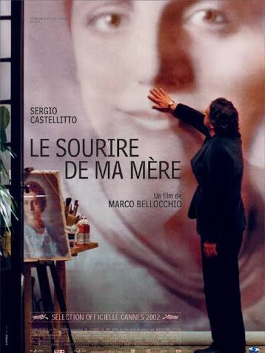
Un peintre athée, joué par Sergio Castellitto, apprend que sa famille veut faire béatifier sa mère, qu'il sait ne pas avoir été une sainte. Arrive la figure du champ-contrechamp, dans un cinéma de dialogue. Un affaissement ? Plutôt un échange d'une intelligence merveilleuse : un affrontement entre deux points de vue irréconciliables, qui jouent l'un de l'autre.
Un sacré kitsch. Retour des images pieuses, d'un pseudo-sacré que Bellocchio remarque dans une Italie qui va vers l'extrême droite. Un religieux kitsch et cynique, puissamment dénoncé ici, sur une nappe planante de musique.
« Il faut un père. » Ce que vous avez combattu, on veut le reconstituer : un grand saut dans la fiction, même si l'on n'y croit pas, par intérêt. Toute l'Italie devient une mise en scène. Le moment néo-baroque, presque : des artifices consolateurs.
C'est plutôt à ce niveau que se situe la critique des médias : la mise en scène permanente.
Extrait 7 : Buongiorno, notte, l'enfant
De Buongiorno, notte, l'extrait prévu montre la télévision comme seul rapport de Chiara avec l'extérieur, et la place des archives. Un rapport de claustration, d'enfermement ?
Un soliloque avec la télévision, mais un surgissement de la réalité à travers un bébé : une voisine lui confie son nourrisson. Qu'est-ce que la vie, pour une militante radicalisée ? Une pulsion de mort dans la radicalité ? En tout cas, elle ne sait pas quoi faire du bébé.
Un classicisme hanté. À partir des années 2000 surgissent des images hétérogènes : l'œuvre interroge l'action des médias.
Extrait 8 : Vincere (2009)
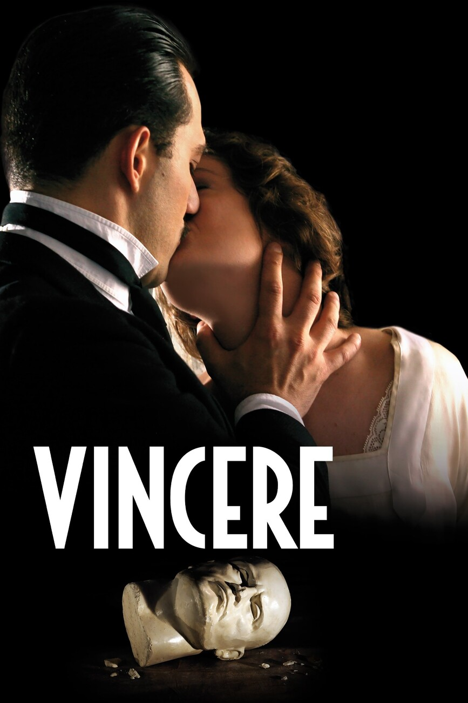
La femme et le fils de Mussolini. Ida Dalser, sa première compagne, qui lui donna un fils, Benito Albino : une liaison dont le Duce a essayé de supprimer toutes les traces. Les deux mourront à l'asile, et finiront dans la fosse commune.
Vincere, ou l'histoire de biais. Le socialisme et le pacifisme jetés aux ordures pour le fascisme, par ce primo-adoptant qu'est Mussolini. Le film met en scène l'érotique du fascisme, et son esthétique, le futurisme, plastique, striée par la musique.
Qui désigne le fou. Premier extrait : Ida se jette dans une réunion fasciste pour retrouver Benito, mais elle est désignée comme folle et envoyée à l'asile. Le pouvoir, c'est celui qui peut désigner qui est fou. L'asile d'aliénés, lieu de prédilection d'un Bellocchio décidément foucaldien.
Dans la pénombre, les recoins de l'histoire, d'où l'on aperçoit la folie de l'Italie : une schizophrénie collective, qu'on voit dans les images d'archives.
Second extrait : le fils de Mussolini, lui aussi enfermé, rejoue son père, visage convulsif, devant les images du Duce. « Vincere », nous vaincrons. Un concours de grimaces, l'outrance du fascisme, un saisissant jeu de reflets.
Chapitre 20
Soixante ans de cinéma
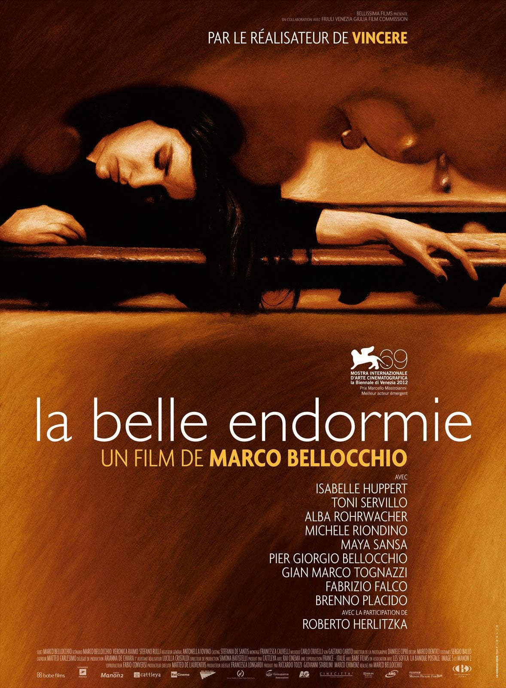
Les années 2010 voient de nouvelles évolutions. Plus mineures ? Bellocchio devient un cinéaste journaliste, qui se fournit dans l'actualité italienne. La Belle Endormie (2012) reprend l'affaire Eluana Englaro, jeune femme dans le coma depuis dix-sept ans, dont le père obtint en 2008-2009 le droit de faire arrêter l'alimentation, au milieu d'une tempête politique et religieuse. Dessiner une fiction à partir d'un fait d'actualité : il a la facilité de le faire.
Soixante ans de création : pas seulement des films, mais aussi des documentaires et des séries, Esterno notte et Portobello, sur l'affaire Enzo Tortora.
Marx peut attendre (2021)
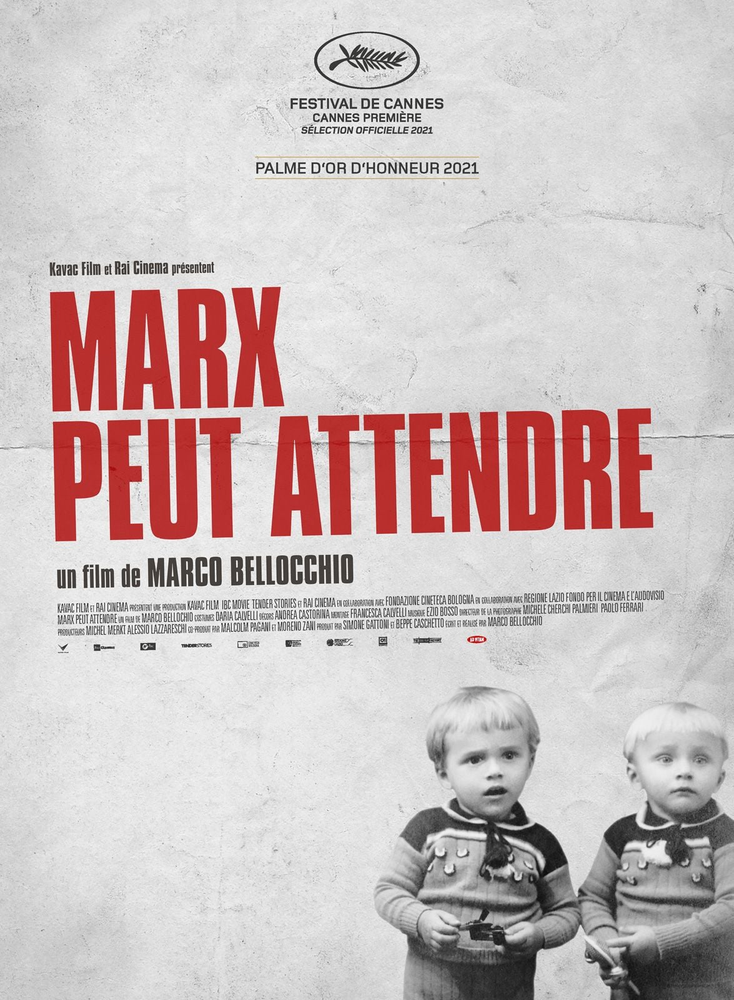
En 2021, un documentaire sous forme de film de famille : Marx peut attendre. Tout un programme. C'est la phrase que Bellocchio aurait opposée à son frère jumeau Camillo, qui lui demandait de l'aide peu avant son suicide en 1968 : mettre en pause ses engagements politiques pour un drame existentiel.
Le film désigne l'aveuglement familial, qui n'a pas empêché le frère d'arriver à ses fins, à sa fin.
L'ombre de la famille. L'ombre de la famille dans tous ses films : n'est-ce pas un peu réducteur ? Ce qui est sûr, c'est qu'il fait lui-même retour sur sa famille. Le frère jumeau, son reflet, qui se suicide : cela peut interroger sur l'alter ego, sur la ligne de vie numéro deux. Il aura aussi eu un frère dément.
Les hétérotopies. Foucault appelle hétérotopies ces « espaces autres » où l'espace et le temps ne s'écoulent pas de la même manière : l'asile, la prison, le collège, le cimetière. Nombreux sont les lieux visités par Bellocchio sur ce thème : la maison de Bobbio, le collège des jésuites, l'appartement-prison, l'asile de Vincere.
Une hypothèse à vérifier. Depuis la troisième partie, une hypothèse court dans ces pages : Bellocchio psychanalyse l'Italie par le cinéma. On dit souvent que ses grands thèmes sont la famille et la folie. Ce sont précisément les objets de la psychanalyse : la famille, avec le père, la mère et le fils, le roman familial et l'Œdipe ; la folie, entre névrose et psychose.
Une troisième entrée les tient ensemble : l'enfermement, les lieux comme espaces mentaux des personnages. Et un langage les traverse toutes : le rêve, que Freud appelait la voie royale vers l'inconscient.
La famille, forme du pouvoir
Mais Bellocchio ne les applique pas seulement à des individus. Chez lui, la famille est la forme même du pouvoir italien : le pape est le Saint-Père, Mussolini se veut le père de la nation, la mafia s'appelle la famille, et l'enlèvement de Moro est un meurtre du père. « Il faut un père », dit-on dans Le Sourire de ma mère.
Ce n'est pas un trait de caractère national, c'est une institution datée, et en crise. Le divorce n'est légalisé qu'en 1970, confirmé par référendum en 1974 ; le crime d'honneur reste dans le code pénal jusqu'en 1981. Les Poings dans les poches attaque la famille au moment même où le pays se dispute sur ce qu'elle doit être.
L'enfermement, espace mental. Chez Bellocchio, le lieu clos est la psyché du personnage. La maison de Bobbio des Poings dans les poches, château gothique où les miroirs captent l'angoisse. Le collège des jésuites d'Au nom du père, boîte mentale où naissent les hallucinations. L'appartement du Saut dans le vide, que la caméra parcourt comme une psyché, et dont on ne sort que par la fenêtre. L'appartement-prison de Buongiorno, notte. L'asile de Vincere.
Foucault appelle ces lieux des hétérotopies. Bellocchio en fait des scènes intérieures : on y entre comme dans une tête, et ce qui s'y passe vaut pour tout le pays.
On entre dans ses lieux comme dans une tête.
La folie, symptôme
La folie, c'est ce que cette famille-État ne peut pas intégrer : elle le déclare fou et l'enferme. Le pouvoir, c'est celui qui peut désigner qui est fou. Ida Dalser finit à l'asile parce qu'elle dérange le récit du Duce. Le lieu d'enfermement est donc aussi le lieu où l'Italie range ce qu'elle refoule.
Le rêve, enfin, c'est l'inconscient qui revient : les archives et le cinéma dans la tête de Chiara. Famille, folie, enfermement, et le rêve pour langage : l'hypothèse est validée. Bellocchio fait, de film en film, la psychanalyse de l'Italie, à ciel ouvert.
Une psychanalyse de l'Italie, à ciel ouvert.
Des images, et par les images. Plus précisément, Bellocchio est un psychanalyste des images, et par les images. Il analyse les images que l'Italie produit d'elle-même, et il les analyse avec des images.
D'où, même dans les années tardives, son goût pour les faits divers : l'affaire Moro, Eluana Englaro, Tommaso Buscetta, Edgardo Mortara, Enzo Tortora. Des histoires qui ont obsédé le pays, ressassées par la presse et la télévision, comme des rêves collectifs. Il les reprend comme un analyste reprend le matériau de son patient.
D'où son compagnonnage avec un psychanalyste, Massimo Fagioli, dont la méthode passe par l'interprétation des rêves, donc des images. Et d'où son focus sur la famille, la première scène où se forment nos images de l'autorité, du père à l'État.
Une Italie désaccordée, dont il fait entendre les fausses notes.
Conclusion générale
Ces deux journées racontent une seule histoire, en quatre temps.
Une naissance. Au sortir de la guerre, dans un pays en ruines, le néoréalisme naît comme une réaction vitale : contre le cinéma d'évasion du fascisme, celui des téléphones blancs, mais surtout de la guerre elle-même. Avec des pellicules du marché noir et des comiques de cabaret, l'Italie invente le cinéma qui la montre telle qu'elle est. C'est la source vive du cinéma italien, qui ne va pas tarder à s'hybrider…
Une hybridation. Le genre et les filons s'emparent du néoréalisme, d'abord pour le prolonger, puis pour le diluer : néoréalisme rose, comédie à l'italienne, western, polar. La misère reste à l'écran, mais il faut en rire ou en frissonner. « Moins de guenilles, plus de jambes » : c'est, en substance, le mot d'ordre de Giulio Andreotti, jeune sous-secrétaire au spectacle de la Démocratie chrétienne. Andreotti ne veut plus que le monde voie une Italie en haillons. Sa loi de 1949 calcule les aides sur les recettes, ce qui favorise les films populaires et inoffensifs, et permet de refuser l'exportation des films qui donnent une mauvaise image du pays. C'est une censure qui ne dit pas son nom : elle passe par l'argent, pas par l'interdiction. Le cinéma italien va s'y adapter, souvent avec bonheur.
Une extinction. La télévision de Berlusconi achève d'éteindre ce cinéma. En 1976, la Cour constitutionnelle met fin au monopole de la RAI, et les chaînes locales se multiplient. Celles de Berlusconi deviennent nationales sans le dire, en diffusant les mêmes cassettes à la même heure. Il en sort un duopole : la RAI d'un côté, Canale 5, Italia 1 et Rete 4 de l'autre. Les chaînes rachètent des catalogues entiers de films, mais ce sont le sport et les animateurs vedettes qui font l'audience. Le film n'est plus un événement : il devient une case dans une grille, entre deux écrans publicitaires. La télévision ne tue pas le cinéma à elle seule : les salles vieillissaient, la voiture et les boîtes de nuit vidaient les fauteuils, les filons se tarissaient. Mais c'est elle qui remplace le film par le programme, dans une Italie qui devient folle de télé.
Un retour. Reste un cinéma exigeant, à la marge. Dans les années 80 et 90, quand la télévision règne, deux cinéastes surtout traversent les années Berlusconi sans rendre les armes, par des voies inverses.
Moretti choisit l'écart. Depuis Je suis un autarcique, tourné en super 8 en 1976, il produit ses films, possède sa salle à Rome, et filme l'Italie à la première personne, en témoin agacé de son époque, jusqu'à prendre Berlusconi pour sujet dans Le Caïman (2006).
Et surtout Bellocchio, qui fait remonter ce passé de cinéma dans la tête d'une brigadiste, celle de Buongiorno, notte (2003), et qui, des Poings dans les poches (1965) à Vincere (2009), enferme l'Italie dans des maisons, des collèges et des asiles pour mieux la psychanalyser, caméra en main.
***
Depuis les années 2000, la relève est venue : Paolo Sorrentino, Matteo Garrone, Alice Rohrwacher, Pietro Marcello. Et elle passe souvent, comme au temps de Don Camillo et de Rocco, par la coproduction franco-italienne.
Martin Eden (Pietro Marcello, 2019), coproduit avec la France, transporte le roman de Jack London à Naples et le tisse d'images d'archives : un film qui pense l'Italie avec les images de son passé, comme les rêves de Chiara.
La Gradiva (Marine Atlan, 2026), coproduction franco-italienne, Grand Prix de la Semaine de la critique à Cannes, suit des lycéens français en voyage scolaire à Naples et à Pompéi, et prolonge la grâce d'un cinéma italien qui aura inspiré toute une cinématographie mondiale.
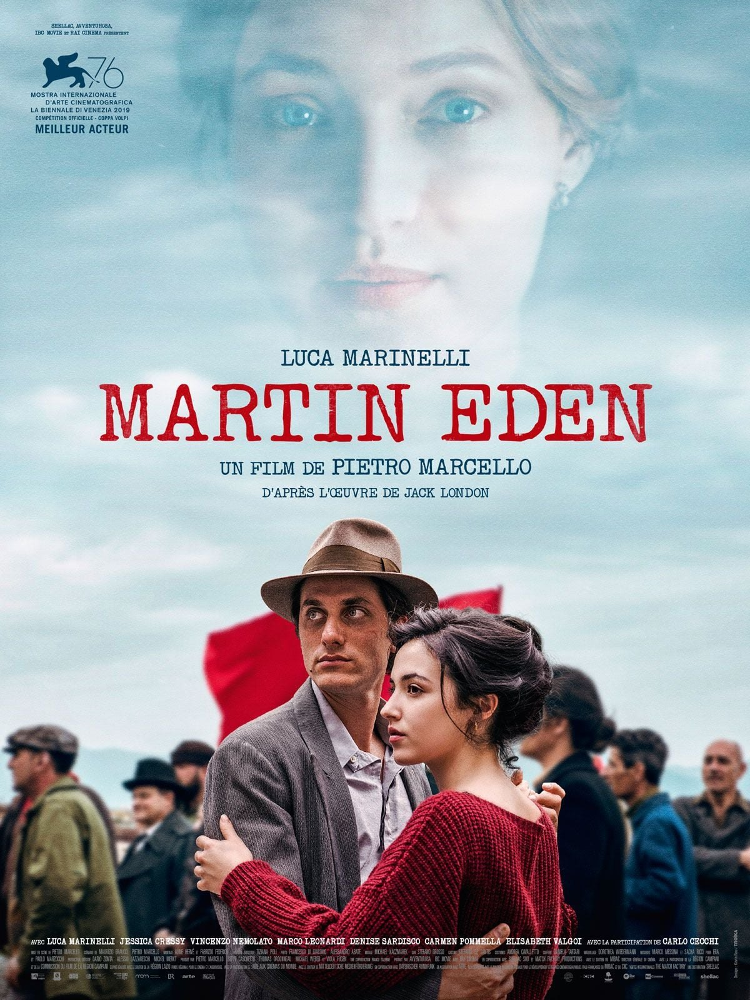
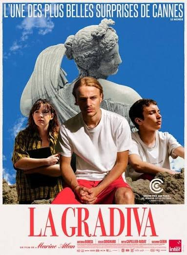
Annexes
De Cabiria à la télé couleur
- 1910Afflux de capitaux dans le cinéma
- 1914Cabiria : premier passage au long métrage
- 1919-26Grandeur et chute de l'UCI
- 1937Inauguration de Cinecittà
- 1943Armistice, occupation allemande
- 1945Rome, ville ouverte
- 1949Loi Andreotti sur le cinéma
- 1957Premier Carosello à la RAI
- 1960La Dolce Vita, Rocco et ses frères
- 1969Piazza Fontana, stratégie de la tension
- 1976Feu vert aux télés locales
- 1977Télé couleur, fin de Carosello
- 1978Enlèvement et assassinat d'Aldo Moro
- 1992Falcone, Borsellino, Mains propres
- 2003Buongiorno, notte à Venise
Les extraits projetés
| Année | Film | Réalisateur |
|---|---|---|
| 1945 | Rome, ville ouverte | Rossellini |
| 1945 | À bas la misère | Righelli |
| 1946 | Paisà | Rossellini |
| 1947 | Jeunesse perdue | Germi |
| 1950 | Bannie du foyer | Matarazzo |
| 1950 | Le Chemin de l'espérance | Germi |
| 1951 | Gendarmes et voleurs | Steno, Monicelli |
| 1953 | Pain, amour et fantaisie | Comencini |
| 1954 | L'Or de Naples | De Sica |
| 1957 | Le Cri | Antonioni |
| 1958 | Le Pigeon | Monicelli |
| 1960 | Rocco et ses frères | Visconti |
| 1963 | Les Monstres | Risi |
| 1963 | Main basse sur la ville | Rosi |
| 1976 | Le Clan des pourris | Lenzi |
| 1985 | Ginger et Fred | Fellini |
| 1996 | Celluloïd | Lizzani |
| 2003 | Buongiorno, notte | Bellocchio |
Marco Bellocchio, repères
| Année | Film |
|---|---|
| 1965 | Les Poings dans les poches |
| 1967 | La Chine est proche |
| 1972 | Au nom du père |
| 1975 | Fous à délier (doc.) |
| 1980 | Le Saut dans le vide |
| 1986 | Le Diable au corps |
| 2002 | Le Sourire de ma mère |
| 2003 | Buongiorno, notte |
| 2009 | Vincere |
| 2012 | La Belle Endormie |
| 2021 | Marx peut attendre |
| 2022 | Esterno notte (série) |
| 2023 | L'Enlèvement |
Aussi au programme du jeudi : Larmes de joie (Monicelli, 1960), Quinze jours ailleurs (Minnelli, 1962), L'Armée Brancaleone s'en va-t-aux croisades (Monicelli, 1969). À voir aussi : Todo modo (Petri, 1976), Divorce à l'italienne (Germi, 1961).
Lectures
- Anna Laura Braghetti et Paola Tavella, Le Prisonnier : 55 jours avec Aldo Moro, Denoël, 1999.
- Barbara Corsi, Con qualche dollaro in meno. Storia economica del cinema italiano, Editori Riuniti, 2001.
- Mathias Sabourdin (dir.), Dictionnaire du cinéma italien, Nouveau Monde, 2014.
- Bernard Stiegler, La Technique et le Temps 3. Le Temps du cinéma et la question du mal-être, Galilée, 2001 ; La Télécratie contre la démocratie, Flammarion, 2006.
- Laurence Schifano, Le Cinéma italien de 1945 à nos jours, Armand Colin, 2022.
En ligne
- Magazine de la Cinémathèque française : conférences et documents sur les cinéastes italiens.
- Conversation avec Marco Bellocchio, sur arte.tv.
- Le Padlet de la formation, sur le site de la DAAC cinéma de Versailles.
Sources des compléments
- Unione Cinematografica Italiana et Encyclopedia.com, Italy : la crise des années 20.
- Il Post : Andreotti et Umberto D.
- Carosello : la publicité à la RAI, 1957-1977.
- Cour constitutionnelle, arrêt 202/1976 : les télés locales.
- La Gazette : le festival de Villerupt.
- AGI : les 55 jours de l'affaire Moro.
- Il Post : Anna Laura Braghetti.
- Senses of Cinema : le titre, Dickinson, Pink Floyd.
- Todo modo : le film de Petri.